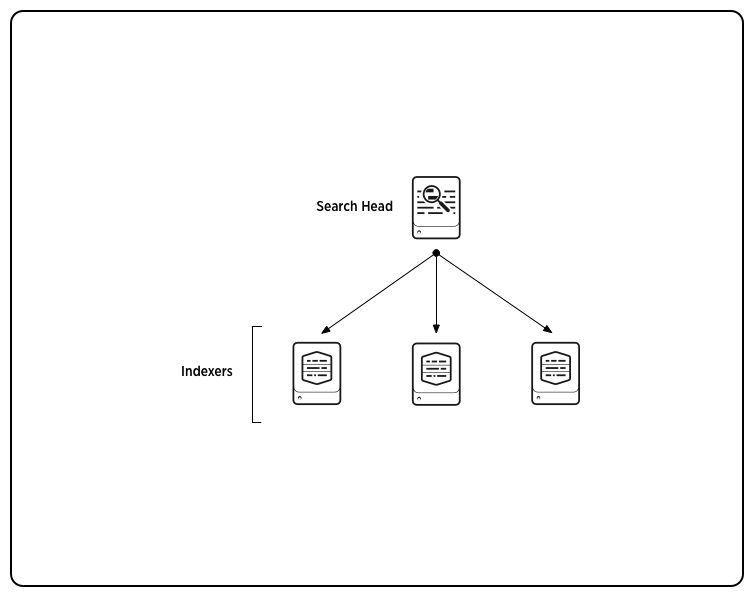
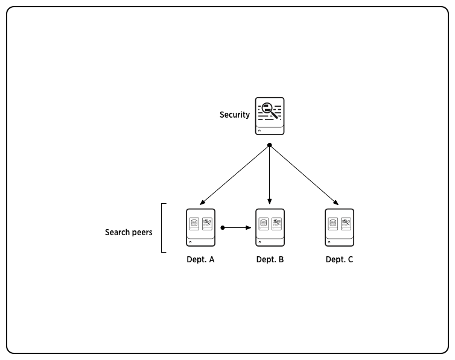
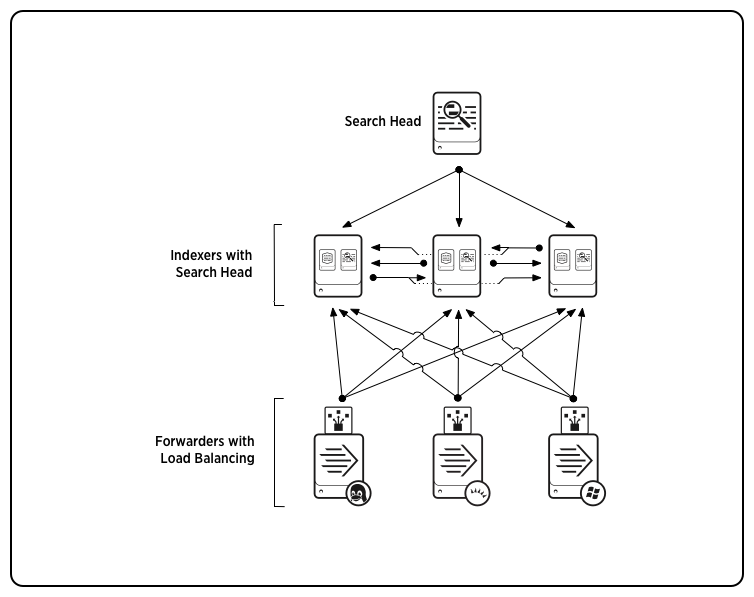
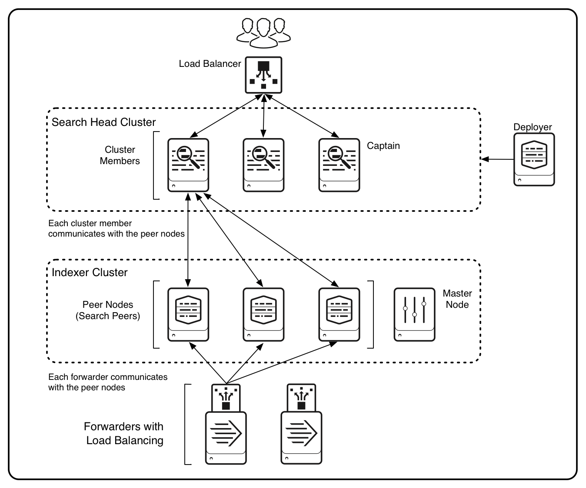
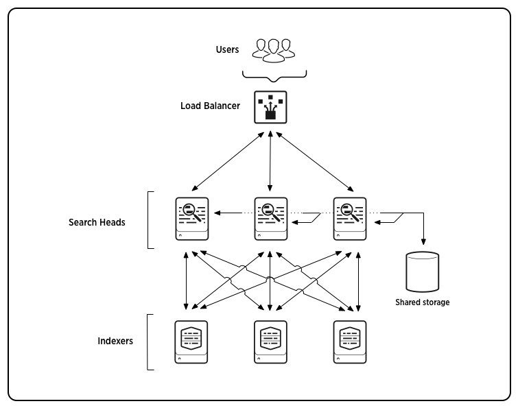
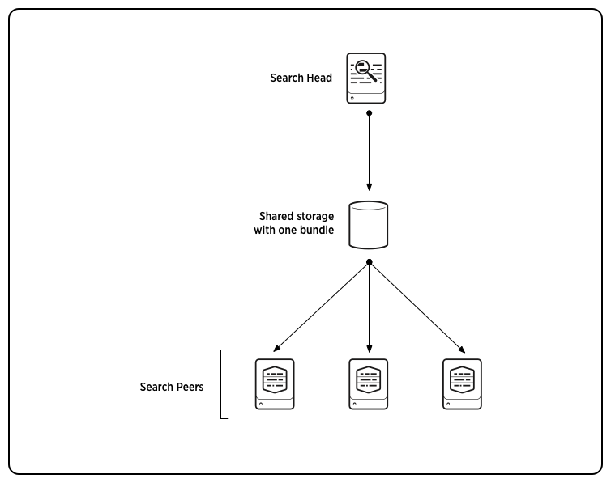
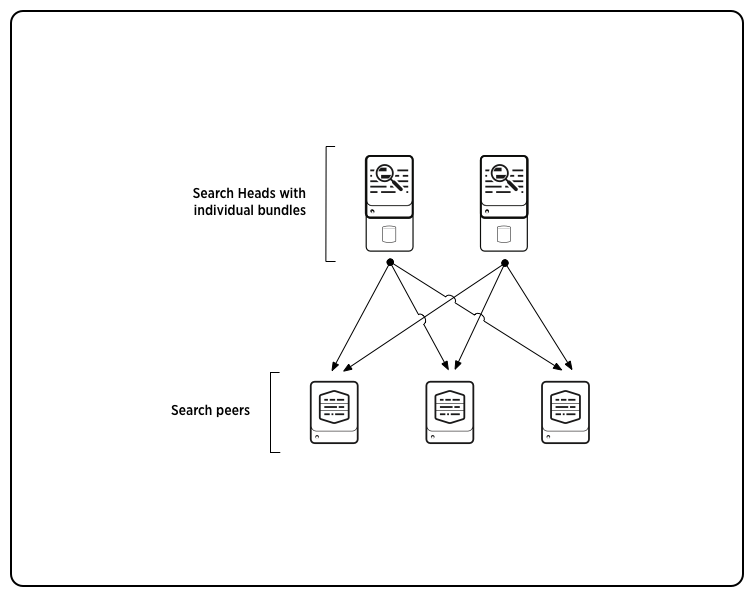

Before reading this manual, see the Distributed Deployment Manual. That manual describes the fundamentals of Splunk Enterprise distributed deployment and shows how distributed search contributes to the overall deployment.
Distributed search provides a way to scale your deployment by separating the search management and presentation layer from the indexing and search retrieval layer.
These are some of the key use cases for distributed search:
With distributed search, a Splunk Enterprise instance called a search head sends search requests to a group of indexers, or search peers, which perform the actual searches on their indexes. The search head then merges the results back to the user. Here is a basic distributed search scenario, with one dedicated search head managing searches across several indexers:

There are several fundamental options for deploying a distributed search environment:
The rest of this topic provides an introduction to these topologies.
The typical distributed search deployment uses a dedicated search head; that is, a search head dedicated to running searches. A dedicated search head does not index external data.
You can also configure one or more of your instances to function as both search peer and search head. These dual-purpose search heads can take the place of, or be in addition to, a dedicated search head. See "Some search scenarios" for examples of several distributed search topologies involving both dedicated and non-dedicated search heads.
A search head cluster is a group of search heads that work together to provide scalability and high availability. It serves as a central resource for searching across a set of search peers.
The search heads in a cluster are, for most purposes, interchangeable. All search heads have access to the same set of search peers. They can also run or access the same searches, dashboards, knowledge objects, and so on.
A search head cluster is the recommended topology when you need to run multiple search heads across the same set of search peers. The cluster coordinates the activity of the search heads, allocates jobs based on the current loads, and ensures that all the search heads have access to the same set of knowledge objects.
See "About search head clustering."
Indexer clusters also use search heads to search across the set of indexers, or peer nodes. The search heads in an indexer cluster can be either independent dedicated search heads or members of a search head cluster.
You deploy and configure search heads very differently when they are part of an indexer cluster:
Distributed search offers a variety of ways to split functionality across a set of Splunk Enterprise instances. You can deploy dedicated search heads and dedicated indexers, or indexers that double as search heads, or a combination of both. This topic illustrates a few possible scenarios.
Note: The terms indexer and search peer are used interchangeably.
This diagram shows a simple distributed search scenario for horizontal scaling, with one dedicated search head searching across three indexers:
In this diagram showing a distributed search scenario for access control, a dedicated search head in the Security department has visibility into all the indexing search peers. Each search peer also has the ability to search its own data. In addition, the department A search peer has access to both its data and the data of department B:

This diagram shows load-balanced forwarders inputting data across the set of indexers. In addition to a dedicated search head, each indexer doubles as a search head. All the search heads can search across the entire set of indexers:

For information on load balancing, see "Set up load balancing" in the Forwarding Data manual.
When initiating a distributed search, the search head replicates and distributes its knowledge objects to its search peers, or indexers. Knowledge objects include saved searches, event types, and other entities used in searching across indexes. The search head needs to distribute this material to its search peers so that they can properly execute queries on its behalf. This set of knowledge objects is called the knowledge bundle.
The search peers use the search head's knowledge bundle to execute queries on its behalf. When executing a distributed search, the peers are ignorant of any local knowledge objects. They have access only to the objects in the search head's knowledge bundle.
Bundles typically contain a subset of files (configuration files and assets) from $SPLUNK_HOME/etc/system, $SPLUNK_HOME/etc/apps and $SPLUNK_HOME/etc/users.
The process of distributing knowledge bundles means that peers by default receive nearly the entire contents of the search head's apps. If an app contains large binaries that do not need to be shared with the peers, you can eliminate them from the bundle and thus reduce the bundle size. See "Modify the knowledge bundle".
On the search head, the knowledge bundles resides under the $SPLUNK_HOME/var/run directory. The bundles have the extension .bundle for full bundles or .delta for delta bundles. They are tar files, so you can run tar tvf against them to see the contents.
The knowledge bundle gets distributed to the $SPLUNK_HOME/var/run/searchpeers directory on each search peer. Because the knowledge bundle reside at a different location on the search peers than on the search head, search scripts should not hardcode paths to resources.
All authorization for a distributed search originates from the search head. At the time it sends the search request to its search peers, the search head also distributes the authorization information. It tells the search peers the name of the user running the search, the user's role, and the location of the distributed authorize.conf file containing the authorization information.
Important: The topics in this chapter explain how to deploy a non-clustered distributed search topology. For information on deploying a search head cluster instead, read the chapter "Deploy search head clustering."
The basic configuration to enable distributed search is simple. You just designate one or more Splunk Enterprise instances as search heads and establish connections from each search head to a set of search peers, or indexers.
This is the type of topology that this topic specifically addresses:
The search head interfaces with the user and manages searches across the set of indexers. The indexers index incoming data and search the data, as directed by the search head.
The deployment process is similar for any variants on this topology, such as multiple search heads or non-dedicated search heads that also serve as indexers.
To set up a simple distributed search topology, consisting of a single dedicated search head and several search peers, perform these steps:
1. Identify your requirements. See "System requirements and other deployment considerations for distributed search".
2. Designate a Splunk Enterprise instance as the search head. Since distributed search is enabled automatically on every full Splunk Enterprise instance, you do not actually perform any action in this step, aside from choosing the instance that you want to be your search head.
For a dedicated search head, choose an existing instance that is not indexing external data or install a new instance. For installation information, see the topic in the Installation Manual specific to your operating system.
3. Establish connections from the search head to all the search peers that you want it to search across. This is the key step in the procedure. See "Add search peers to the search head".
4. Add data inputs to the search peers. You add inputs in the same way as for any indexer, either directly on the search peer or through forwarders connecting to the search peer. See the Getting Data In manual for information on data inputs.
5. Forward the search head's internal data to the search peers. See "Best practice: Forward search head data to the indexer layer".
6. Log in to the search head and perform a search that runs across all the search peers, such as a search for *. Examine the splunk_server field in the results. Verify that all the search peers are listed in that field.
7. See the Securing Splunk Enterprise manual for information on setting up authentication.
To set up a more complex topology, deploy additional search heads and search peers as needed.
In some cases, you might need to deploy instances that serve as both search heads and search peers. You configure these dual-purpose search heads in the same way as dedicated search heads, by establishing connections to all external search peers.
See "Some search scenarios" for examples of distributed search topologies that use both dedicated and non-dedicated search heads.
Splunk indexer clusters use search heads to search across their set of indexers, or peer nodes. You deploy search heads very differently when they are part of an indexer cluster. To learn about deploying search heads in indexer clusters, read "Enable the search head" in the Managing Indexers and Clusters of Indexers manual.
This topic describes the key considerations when deploying a basic distributed search topology with search heads that function independently of each other. If instead you are deploying a search head cluster, see "System requirements and other deployment considerations for search head clusters."
For information on the hardware requirements for search heads and search peers (indexers), see "Reference hardware" in the Capacity Planning Manual.
It is best to upgrade search heads and search peers at the same time, to take full advantage of the latest search capabilities. If you cannot do so, follow these version compatibility guidelines.
6.x search heads are compatible with 6.x and 5.x search peers. The search head must be at the same or a higher level than the search peers:
These guidelines are valid for both standalone search heads and search heads that are participating in a search head cluster.
Important: Search heads participating in indexer clusters have different compatibility restrictions. See "Splunk Enterprise version compatibility" in the Managing Indexers and Clusters of Indexers manual.
You can run a 6.x search head against 5.x search peers, but there are a few compatibility issues to be aware of. To take full advantage of the 6.x feature set, it is recommended that you upgrade both search head(s) and search peers at the same time.
This section describes the compatibility issues.
When running a 6.x search head against 5.x search peers, note the following:
predict command) on the search head.
Each instance in a distributed search deployment must have access to a license pool. This is true for both search heads and search peers. See "Licenses for search heads" in Admin Manual.
It is important that you synchronize the system clocks on all machines, virtual or physical, that are running Splunk Enterprise instances participating in distributed search. Specifically, this means your search heads and search peers. In the case of search head pooling or mounted bundles, this also includes the shared storage hardware. Otherwise, various issues can arise, such as bundle replication failures, search failures, or premature expiration of search artifacts.
The synchronization method you use depends on your specific set of machines. Consult the system documentation for the particular machines and operating systems on which you are running Splunk Enterprise. For most environments, Network Time Protocol (NTP) is the best approach.
To activate distributed search, you add search peers, or indexers, to a Splunk Enterprise instance that you designate as a search head. You do this by specifying each search peer manually.
This topic describes how to connect a search head to a set of search peers. To deploy multiple search heads, repeat the procedure for each search head.
Important: Clusters establish connectivity between search heads and search peers differently from the procedures described in this topic:
To set up the connection between a search head and its search peers, configure the search head through one of these methods:
distsearch.conf configuration file
Splunk Web is the simplest method for most purposes.
The configuration occurs on the search head. For most deployments, no configuration is necessary on the search peers. Access to the peers is controlled through public key authentication.
Before an indexer can function as a search peer, you must change its password from the default "changeme". Otherwise, the search head will not be able to authenticate against it.
To specify the search peers:
1. Log into Splunk Web on the search head and click Settings at the top of the page.
2. Click Distributed search in the Distributed Environment area.
3. Click Search peers.
4. On the Search peers page, select New.
5. Specify the search peer, along with any authentication settings.
6. Click Save.
7. Repeat for each of the search head's search peers.
To configure other settings:
1. Log into Splunk Web on the search head and click Settings at the top of the page.
2. Click Distributed search in the Distributed Environment area.
3. Click Distributed search setup.
5. Change any settings as needed.
6. Click Save.
To specify the search peers:
1. Navigate to the $SPLUNK_HOME/bin/ directory on the search head.
2. Invoke the splunk add search-server command for each search peer you want to add.
For example:
splunk add search-server -host 10.10.10.10:8089 -auth admin:password -remoteUsername admin -remotePassword passremote
Note the following:
-host flag to specify the IP address and management port for the search peer.
-auth flag for the local credentials and the -remoteUsername and -remotePassword flags for the remote credentials. The remote credentials must be for an admin-level user on the search peer.
The settings available through Splunk Web provide sufficient options for most configurations. Some advanced configuration settings, however, are only available by directly editing distsearch.conf. This section discusses only the configuration settings necessary for connecting search heads to search peers. For information on the advanced configuration options, see the distsearch.conf spec file.
To connect the search peers:
1. Create or edit a distsearch.conf file on the search head.
2. Add the set of search peers to the [distributedSearch] stanza as a set of comma-separated values (IP addresses with management ports). For example:
[distributedSearch]
servers = 192.168.1.1:8089,192.168.1.2:8089
3. Restart the search head.
If you add search peers via Splunk Web or the CLI, Splunk Enterprise automatically configures authentication. However, if you add peers by editing distsearch.conf, you must distribute the key files manually. After adding the search peers and restarting the search head, as described above:
1. Copy the file $SPLUNK_HOME/etc/auth/distServerKeys/trusted.pem from the search head to $SPLUNK_HOME/etc/auth/distServerKeys/<searchhead_name>/trusted.pem on each search peer.
The <searchhead_name> is the search head's serverName, specified in server.conf.
2. Restart each search peer.
Multiple search heads can search across a single peer. The peer must store a copy of each search head's certificate.
The search peer stores the search head keys in directories with the specification $SPLUNK_HOME/etc/auth/distServerKeys/<searchhead_name>.
For example, if you have two search heads, named A and B, and they both need to search one particular search peer, do the following:
1. On the search peer, create the directories $SPLUNK_HOME/etc/auth/distServerKeys/A/ and $SPLUNK_HOME/etc/auth/distServerKeys/B/.
2. Copy A's trusted.pem file to $SPLUNK_HOME/etc/auth/distServerKeys/A/ and B's trusted.pem to $SPLUNK_HOME/etc/auth/distServerKeys/B/.
3. Restart the search peer.
You can group search peers into distributed search groups. This allows you to target searches to subsets of search peers. See "Create distributed search groups".
It is considered a best practice to forward all search head internal data to the search peer (indexer) layer. This has several advantages:
The preferred approach is to forward the data directly to the indexers, without indexing separately on the search head. You do this by configuring the search head as a forwarder. These are the main steps:
1. Make sure that all necessary indexes exist on the indexers. For example, the S.o.S app uses a scripted input that puts data into a custom index. If you install S.o.S on the search head, you need to also install the S.o.S Add-on on the indexers, to provide the indexers with the necessary index settings for the data the app generates. On the other hand, since _audit and _internal exist on indexers as well as search heads, you do not need to create separate versions of those indexes to hold the corresponding search head data.
2. Configure the search head as a forwarder. Create an outputs.conf file on the search head that configures the search head for load-balanced forwarding across the set of search peers (indexers). You must also turn off indexing on the search head, so that the search head does not both retain the data locally as well as forward it to the search peers.
Here is an example outputs.conf file:
# Turn off indexing on the search head
[indexAndForward]
index = false
[tcpout]
defaultGroup = my_search_peers
forwardedindex.filter.disable = true
indexAndForward = false
[tcpout:my_search_peers]
server=10.10.10.1:9997,10.10.10.2:9997,10.10.10.3:9997
autoLB = true
This example assumes that each indexer's receiving port is set to 9997.
For details on configuring outputs.conf, read "Configure forwarders with outputs.conf" in the Forwarding Data manual.
You perform the same configuration steps to forward data from search head cluster members to their set of search peers. However, you must ensure that all members use the same outputs.conf file. To do so, do not edit the file on the individual search heads. Instead, use the deployer to propagate the file across the cluster. See "Use the deployer to distribute apps and configuration updates."
The knowledge bundle is the data that the search head replicates and distributes to each search peer to enable its searches. For information on the contents and purpose of this bundle, see "What search heads send to search peers".
The knowledge bundle consists of a set of files that the search peers ordinarily need in order to perform their searches. You can, if necessary, modify this set of files. The main reasons for modifying the set of files are if:
See distsearch.conf in the Admin Manual for details on the settings discussed in this topic.
The system looks at two stanzas in distsearch.conf to determine which *.conf files to include in the bundle, in this order:
1. [replicationWhitelist]
2. [replicationSettings:refineConf]
You typically only need to edit the [replicationSettings:refineConf] stanza to customize the bundle for your app, but, under rare circumstances, you might also need to modify the [replicationWhitelist] stanza.
Since the system starts by examining the [replicationWhitelist] stanza, this discussion does too.
The [replicationWhitelist] stanza in the system default version of distsearch.conf whitelists all the *.conf files that are specified in the [replicationSettings:refineConf] stanza. Therefore, to add or delete a *.conf file from the bundle, do not modify this stanza. Instead, change the set of files specified in the [replicationSettings:refineConf] stanza, as described in the next section, "Edit the replicationSettings:refineConf stanza."
The main reason for modifying the [replicationWhitelist] stanza is to include in the bundle some type of special file for use in a custom search command. This is an unusual circumstance.
If you do need to alter the whitelist, you can override the system default whitelist by creating a version of the [replicationWhitelist] stanza in $SPLUNK_HOME/etc/apps/<appname>/default/distsearch.conf:
[replicationWhitelist]
<name> = <whitelist_regex>
...
The knowledge bundle will include all files that both satisfy the whitelist regex and are specified in [replicationSettings:refineConf]. If multiple regex's are specified, the bundle will include the union of those files.
In this example, the knowledge bundle will include all files with extensions of either ".conf" or ".spec":
[replicationWhitelist]
allConf = *.conf
allSpec = *.spec
The names, such as allConf and allSpec, are used only for layering. That is, if you have both a global and a local copy of distsearch.conf, the local copy can be configured so that it overrides only one of the regex's. For instance, assume that the example shown above is the global copy and that you then specify a whitelist in your local copy like this:
[replicationWhitelist]
allConf = *.foo.conf
The two conf files will be layered, with the local copy taking precedence. Thus, the search head will distribute only files that satisfy these two regex's:
allConf = *.foo.conf
allSpec = *.spec
For more information on attribute layering in configuration files, see "Attribute precedence" in the Admin manual.
Caution: Replication whitelists are applied globally across all conf data, and are not limited to any particular app, regardless of where they are defined. Be careful to pull in only your intended files.
The [replicationSettings:refineConf] stanza in distsearch.conf specifies the *.conf files and *.meta stanzas that get included in the knowledge bundle. If you want to modify the set of files in the bundle, add or delete them from this stanza.
The system default distsearch.conf file includes a version of this stanza that specifies the *.conf files that are normally included in the knowledge bundle:
[replicationSettings:refineConf]
# Replicate these specific *.conf files and their associated *.meta stanzas.
replicate.app = true
replicate.authorize = true
replicate.collections = true
replicate.commands = true
replicate.eventtypes = true
replicate.fields = true
replicate.segmenters = true
replicate.literals = true
replicate.lookups = true
replicate.multikv = true
replicate.props = true
replicate.tags = true
replicate.transforms = true
replicate.transactiontypes = true
If you want to replicate a .conf file that is not in the system default version of the [replicationSettings:refineConf] stanza, create a version of the stanza in $SPLUNK_HOME/etc/apps/<appname>/default/distsearch.conf and specify the *.conf file there. Similarly, you can remove files from the bundle by setting them to "false" in this stanza.
You can also create a replication blacklist, using the [replicationBlacklist] stanza. This is most useful for limiting the size of the knowledge bundle, particularly in the case of very large files that do not need to be replicated to the search peers. The blacklist takes precedence over any whitelist.
Caution: Replication blacklists are applied globally across all conf data, and are not limited to any particular app, regardless of where they are defined. If you are defining an app-specific blacklist, be careful to constrain it to match only files that your application will not need.
The name of each search head and search peer is determined by its serverName attribute, specified in server.conf. The serverName attribute defaults to the server's machine name.
In distributed search, all search heads and search peers in the group must have unique names. The serverName has three specific uses in distributed search:
/etc/auth/distServerKeys/<searchhead_name>/trusted.pem.
serverName is the value of the splunk_server field that you specify when you want to query a specific node. See "Retrieve events from indexes and distributed search peers" in the Search manual.
serverName gets reported back in the splunk_server field.
Note: serverName is not used when adding search peers to a search head. In that case, you identify the search peers through their domain names or IP addresses.
The only reason to change serverName is if you have multiple instances of Splunk Enterprise residing on a single machine, and they're participating in the same distributed search group. In that case, you'll need to change serverName to distinguish them.
You can group your search peers to facilitate searching on a subset of them. Groups of search peers are known as "distributed search groups." You specify distributed search groups in the distsearch.conf file.
For example, say you have a set of search peers in New York and another set in San Francisco, and you want to perform searches across peers in just a single location. You can do this by creating two search groups, NYC and SF.
In distsearch.conf, create these stanzas:
[distributedSearch]
# This stanza lists the full set of search peers.
servers = 192.168.1.1:8089, 192.168.1.2:8089, 175.143.1.1:8089, 175.143.1.2:8089, 175.143.1.3:8089
[distributedSearch:NYC]
# This stanza lists the set of search peers in New York.
default = false
servers = 192.168.1.1:8089, 192.168.1.2:8089
[distributedSearch:SF]
# This stanza lists the set of search peers in San Francisco.
default = false
servers = 175.143.1.1:8089, 175.143.1.2:8089, 175.143.1.3:8089
This example creates two search groups, NYC and SF, which you can then specify in searches.
Note the following:
servers attribute lists groups of search peers by IP address and management port.
[distributedSearch] stanza.
default attribute to "true," the peers in that group will be the ones queried when the search does not specify a search group. Otherwise, if you set all groups to "false," the full set of search peers in the [distributedSearch] stanza will be queried when the search does not specify a search group.
To use a search group in a search, specify the search group like this:
sourcetype=access_combined status=200 action=purchase splunk_server_group=NYC | stats count by productThis search runs against only the peers in the NYC location.
Note: This feature is not valid for indexer clustering. In indexer clustering, the cluster replicates data arbitrarily across the set of search peers, or "peer nodes". You cannot know whether any particular set of data will reside on any particular peer.
You can remove a search peer from a search head through Splunk Web or the CLI. As you might expect, doing so merely removes the search head's knowledge of that search peer; it does not affect the peer itself.
You can remove a search peer from a search head through the Distributed search page on the search head's Splunk Web.
Note: This only removes the search peer entry from the search head; it does not remove the search head key from the search peer. In most cases, this is not a problem and no further action is needed.
On the search head, run the splunk remove search-server command to remove a search peer from the search head.
Note the following:
-auth flag to provide credentials for the search head only.
-url flag to specify the peer's location and splunkd management port. By default, the management port is 8089, although it might be different for your deployment.
This example removes the search peer 10.10.10.10:8089:
splunk remove search-server -auth admin:password -url 10.10.10.10:8089
A message indicating success appears after the peer is removed.
As an additional step, you can disable the trust relationship between the search peer and the search head. To do this, delete the trusted.pem file from $SPLUNK_HOME/etc/auth/distServerKeys/<searchhead_name> on the search peer.
Note: The <searchhead_name> is the search head's serverName, as described in "Manage distributed server names".
This step is usually unnecessary.
A search head cluster is a group of Splunk Enterprise search heads that serves as a central resource for searching. The members of a search head cluster are essentially interchangeable. You can run the same searches, view the same dashboards, and access the same search results from any member of the cluster.
To achieve this interchangeability, the search heads in the cluster must share configurations and apps, search artifacts, and job scheduling. Search head clusters automatically propagate most of these shareable resources among the members.
Search head clusters provide these key benefits:
A search head cluster consists of a group of networked search heads, called cluster members. One cluster member, the captain, coordinates all cluster-wide activities. If the member serving as captain goes down, another member takes its place.
The members share:
See "Search head clustering architecture."
You set up a cluster by configuring and deploying the cluster's search heads. The process is similar to how you set up search heads in any distributed search environment. The main difference is that you also need to configure the search heads as cluster members.
See the chapter "Deploy search head clustering".
Users access the cluster the same way that they access any search head. They point their browser at any search head that is a member of the cluster. Because cluster members share jobs, search artifacts, and configurations, it does not matter which search head a user accesses. The user has access to the same set of dashboards, searches, and so on.
To achieve the goals of high availability and load balancing, Splunk recommends that you put a load balancer in front of the cluster. That way, the load balancer can assign the user to any search head in the cluster and balance the user load across the cluster members. If one search head goes down, the load balancer can reassign the user to any remaining search head.
Search head clusters are different from indexer clusters. The primary purpose of indexer clusters is to provide highly available data through coordinated groups of indexers. Indexer clusters always include one or more associated search heads to access the data on the indexers. These search heads might be, but are not necessarily, members of a search head cluster.
For information on search heads in indexer clusters, see the chapter "Configure the search head" in the Managing Indexers and Clusters of Indexers manual.
For information on adding a search head cluster to an indexer cluster, see the topic "Integrate the search head cluster with an indexer cluster" in this manual.
A search head cluster is a group of Splunk Enterprise search heads that serves as a central resource for searching.
A search head cluster consists of a group of search heads that share configurations, job scheduling, and search artifacts. The search heads are known as the cluster members.
One cluster member has the role of captain, which means that it coordinates job scheduling and replication activities among all the members. It also serves as a search head like any other member, running search jobs, serving results, and so on. Over time, the role of captain can shift among the cluster members.
In addition to the set of search head members that constitute the actual cluster, a functioning cluster requires several other components:
Here is a diagram of a small search head cluster, consisting of three members:
This diagram shows the key cluster-related components and interactions:
The captain is a cluster member with additional responsibilities, beyond the search activities common to all cluster members. It serves to coordinate the activities of the cluster. Any member can perform the role of captain, but the cluster has just one captain at any time. Over time, if failures occur, the captain changes and a new member gets elected to the role.
The captain is a cluster member and in that capacity it performs the search activities typical of any cluster member, serving both ad hoc and scheduled searches. If necessary, you can limit the captain's search activities so that it performs only ad hoc searches and not scheduled searches. See "Configure the captain to run ad hoc searches only".
The captain also coordinates activities among all cluster members. Its responsibilities include:
A search head cluster uses a dynamic captain. This means that the member serving as captain can change over the life of the cluster. Any member has the ability to function as captain. When necessary, the cluster holds an election, which can result in a new member taking over the role of captain.
Captain election occurs when:
Note: The mere failure or restart of a non-captain cluster member, without an associated network partition, does not trigger captain election.
To become captain, a member needs a majority vote of all members. For example, in a seven-member cluster, election requires four votes. Similarly, a six-member cluster also requires four votes.
The majority must be a majority of all members, not just of the members currently running. So, if four members of a seven-member cluster fail, the cluster cannot elect a new captain, because the remaining three members are fewer than the required majority of four.
The election process involves timers set randomly on all the members. The member whose timer runs out first stands for election and asks the other members to vote for it. Usually, the other members comply and that member becomes the new captain.
It typically takes one to two minutes after a triggering event occurs to elect a new captain. During that time, there is no functioning captain, and the search heads are aware only of their local environment. The election takes this amount of time because each member waits for a minimum timeout period before trying to become captain. These timeouts are configurable.
The cluster might re-elect the member that was the previous captain, if that member is still running. There is no bias either for or against this occurring.
Once a member is elected as captain, it takes over the duties of captaincy.
Note: A majority of members must be running and participating in the cluster at all times. If the captain does not detect a majority of members, it steps down, relinquishing its authority. An election for a new captain will subsequently occur, but without a majority of participating members, it will not succeed.
If the cluster lacks a majority of members and therefore cannot elect a captain, the members will continue to function as independent search heads. However, they will only be able to service ad hoc searches. Scheduled searches and alerts will not run, because, in a cluster, the scheduling function is relegated to the captain. In addition, configurations and search artifacts will not be replicated during this time.
The need of a majority vote for a successful election has these deployment implications:
The cluster replicates most search artifacts, also known as search results, to multiple cluster members. If a member needs to access an artifact, it accesses a local copy, if possible. Otherwise, it uses proxying to access the artifact.
The cluster maintains multiple copies of artifacts resulting from scheduled saved searches. The replication factor determines the number of copies that the cluster maintains of each artifact. For example, if the replication factor is three, the cluster maintains three copies of each artifact: one on the member that originated the artifact, and two on other members.
The captain coordinates the replication of artifacts to cluster members. As with any search head, clustered or not, when a search is complete, its search artifact is placed in the dispatch directory of the member originating the search. The captain then directs the artifact's replication process, in which copies stream between members until copies exist on the replication factor number of members, including the originating member.
The set of members receiving copies can change from artifact to artifact. That is, two artifacts from the same originating member might have their replicated copies on different members.
The captain maintains the artifact registry, with information on the locations of copies of each artifact. When the registry changes, the captain sends the delta to each member.
If a member goes down, thus causing the cluster to lose some artifact copies, the captain coordinates fix-up activities, with the goal of returning the cluster to a state where each artifact has the replication factor number of copies.
Search artifacts are contained in the dispatch directory, located under $SPLUNK_HOME/var/run/splunk/dispatch. Each dispatch subdirectory contains one search artifact. It is these subdirectories that the cluster replicates.
The cluster only replicates search artifacts resulting from scheduled saved searches. It does not replicate results from these other search types:
Instead, the cluster proxies these results, if they are requested by a non-originating search head. They appear on the requesting member after a short delay.
In addition, if a member needs an artifact from a scheduled saved search but does not itself have a local copy of that artifact, it proxies the results from a member that does have a copy. At the same time, the cluster replicates a copy of that artifact to the requesting member, so that it has a local copy for any future requests. Because of this process, some artifacts might have more than the replication factor number of copies.
With a few exceptions, all cluster members must use the same set of configurations. For example, if a user edits a dashboard on one member, the updates must somehow propagate to all the other members. Similarly, if you distribute an app, you must distribute it to all members. Search head clustering has methods to ensure that configurations stay in sync across the cluster.
There are two types of configuration changes, based on how they are distributed to cluster members:
See "How configuration changes propagate across the search head cluster".
The captain schedules saved search jobs, allocating them to the various cluster members according to load-based heuristics. Essentially, it attempts to assign each job to the member currently with the least search load.
If a job fails on one member, the captain reassigns it to a different member. The captain reassigns the job only once, as multiple failures are unlikely to be resolvable without intervention on the part of the user. For example, a job with a bad search string will fail no matter how many times the cluster attempts to run it.
You can designate a member as "ad hoc only." In that case, the captain will not schedule jobs on it. You can also designate the captain functionality as "ad hoc only." The captain then will never schedule jobs on itself. Since the role of captain can move among members, this setting ensures that captain functionality does not compete with scheduled searches. See "Configure a cluster member to run ad hoc searches only."
Note: The captain does not have insight into the actual CPU load on each member's machine. It assumes that all machines in the cluster are provisioned homogeneously, with the same number and type of cores, and so forth.
KV store can reside on a search head cluster. However, the search head cluster does not coordinate replication of KV store data or otherwise involve itself in the operation of the KV store. For information on KV store, see "About KV store" in the Admin Manual.
The members of a search head cluster have most of the same system requirements as any non-clustered search head. This topic details requirements specific to a search head cluster.
These are the main issues to note regarding provisioning of cluster members:
In addition to the cluster members, you need a deployer to distribute updates to the members. The deployer must run on a non-member instance. In some cases, it can run on the same instance as a deployment server or an indexer cluster master node.
See the remainder of this topic for details on these and other issues.
Each member must run on its own, separate machine or virtual machine.
The hardware requirements for the machine are essentially the same as for any Splunk Enterprise search head. See "Reference hardware" in the Capacity Planning Manual. The main difference is the need for increased storage to accommodate a larger dispatch directory. See "Storage considerations".
Splunk recommends that you use homogeneous machines with identical hardware specifications for all cluster members. The reason is because the cluster captain assigns scheduled jobs to members based on their current job loads. When it does this, it does not have insight into the actual processing power of each member's machine. Instead, it assumes that each machine is provisioned equally.
All search head cluster members and the deployer must run on the same operating system.
If the search head cluster is connected to an indexer cluster, then the indexer cluster instances must run on the same operating system as the search head cluster members.
Search head clustering is available on the following operating systems:
Splunk does not currently support search head clustering on Windows systems.
When determining the storage requirements for your clustered search heads, you need to consider the increased capacity necessary to handle replicated copies of search artifacts.
For the purpose of developing storage estimates, you can observe the size over time of dispatch directories on the search heads in your non-clustered environment, if any, before you migrate to a cluster. Total up the size of dispatch directories across all the non-clustered search heads and then make adjustments to account for the cluster-specific factors.
The most important factor to take into consideration is the replication factor. For example, if you have a replication factor of 3, you will need approximately triple the amount of the total pre-cluster storage, distributed equally among the cluster members.
Other factors can further increase the cluster storage needs. One key factor is the need to plan for node failure. If a member goes down, causing its set of artifacts (original and replicated) to disappear from the cluster, fix-up activities take place to ensure that each artifact once again has its full complement of copies, matching the replication factor. During fix-up, the copies that were resident on the failed member get replicated among the remaining members, increasing the size of each member's dispatch directory.
Other issues can also increase storage on a per-member basis. For example, the cluster does not guarantee an absolutely equal distribution of replicated copies across the members. In addition, the cluster can hold more than the replication factor number of some search artifacts. See "How the cluster handles search artifacts."
As a best practice, equip each member machine with substantially more storage than the estimated need. This allows both for future growth and for temporarily increased need resulting from downed cluster members. The cluster will stop running searches if any of its members runs out of disk space.
You can implement search head clustering on any group of Splunk Enterprise instances, version 6.2 or above. All cluster members must run on the same version of Splunk Enterprise.
Search head clusters can run against 5.x or 6.x search peers. For details on version compatibility between search heads and search peers, see "Version compatibility."
Licensing needs are the same as for any search head. See "Types of Splunk Enterprise licenses" in the Admin Manual.
The cluster must contain at a minimum the number of members needed to fulfill both of these requirements:
For example, if your replication factor is either 2 or 3, you need at least three instances. If your replication factor is 5, you need at least five instances.
You can optionally add more members to boost search and user capacity.
Running a cluster across multiple sites is not currently supported. Search head clusters have been tested only with all members running on a single site.
A cluster member cannot be the search peer of another search head. For the recommended approach to accessing cluster member data, see "Best practice: Forward search head data to the indexer layer."
All members must reside on a high speed network where each member can access every other member.
The members do not necessarily need to be on the same subnet, or even in the same data center, if you have a fast connection between the data centers. You can adjust the various search head clustering timeout settings in server.conf. For help in configuring timeout settings, contact Splunk Professional Services.
These ports must be available on each member:
splunk show kvstore-port to identify the port number.
These ports must be in your firewall's list of allowed ports.
Caution: Do not change the management port on any of the members while they are participating in the cluster. If you need to change the management port, you must first remove the member from the cluster.
It is important that you synchronize the system clocks on all machines, virtual or physical, that are running Splunk Enterprise instances participating in distributed search. Specifically, this means your cluster members and search peers. Otherwise, various issues can arise, such as search failures, premature expiration of search artifacts, or problems with alerts.
The synchronization method you use depends on your specific set of machines. Consult the system documentation for the particular machines and operating systems on which you are running Splunk Enterprise. For most environments, Network Time Protocol (NTP) is the best approach.
You need a Splunk Enterprise instance that functions as the deployer. The deployer updates member configurations. See "Use the deployer to distribute apps and configuration updates".
Deployer functionality is only for use with search head clustering, but it is built into all Splunk Enterprise instances running version 6.2 or above. You have several options as to the instance on which you run the deployer:
Important: Do not locate deployer functionality on a search head cluster member. The deployer must be a separate instance from any cluster member.
A deployer can service only a single search head cluster. If you have multiple clusters, you must use a separate deployer for each one. The deployers must run on separate instances.
Do not use deployment server to update cluster members.
The deployment server is not supported as a means to distribute configurations or apps to cluster members. To distribute configurations across the set of members, you must use the search head cluster deployer. See "Use the deployer to distribute apps and configuration updates".
You cannot enable search head clustering on an instance that is part of a search head pool. For information on migrating, see "Migrate from a search head pool to a search head cluster".
This topic covers the key steps needed to configure and start a search head cluster.
A search head cluster consists of a group of search heads that share configurations, job scheduling, and search artifacts. The search heads are known as the cluster members.
One cluster member has the role of captain, which means that it coordinates job and replication activities among all the members. It also serves as a search head like any other member, running search jobs, serving results, and so on. Over time, the role of captain can shift among the cluster members.
In addition to the set of search head members that constitute the actual cluster, a functioning cluster requires several other components:
This diagram of a small search head cluster, consisting of three members, illustrates the various components and their relationships:
This topic focuses on setting up the cluster members and the deployer. Other topics in this chapter describe how to configure search peers, connect with an indexer cluster, and add a load balancer.
These are the key steps in deploying clusters:
1. Identify your requirements.
2. Set up the deployer.
3. Install the Splunk Enterprise instances.
4. Initialize cluster members.
5. Bring up the cluster captain.
6. Perform post-deployment set-up.
a. Determine the cluster size, that is, the number of search heads that you want to include in it. It usually makes sense to put all your search heads in a single cluster. Factors that influence cluster size include the anticipated search load and number of concurrent users, and your availability and failover needs. See "About search head clustering".
b. Decide what replication factor you want to implement. The replication factor is the number of copies of search artifacts that the cluster maintains. Your optimal replication factor depends on factors specific to your environment, but essentially involves a trade-off between failure tolerance and storage capacity. A higher replication factor means that more copies of the search artifacts will reside on more cluster members, so your cluster can tolerate more member failures without needing to use a proxy to access the artifacts. But it also means that you will need more storage to handle the additional copies. See "Choose the replication factor for the search head cluster."
c. Determine whether the search head cluster will be running against a group of standalone indexers or an indexer cluster. For information on indexer clusters, see "About indexer clusters and index replication" in the Managing Indexers and Clusters of Indexers manual.
d. Study the topic "System requirements and other deployment considerations for search head clusters" for information on other key issues.
It is recommended that you select the deployer now, as part of cluster set-up, because you need a deployer in place before you can distribute apps and updated configurations to the cluster members.
a. Choose a Splunk Enterprise instance for the deployer functionality.
This instance cannot be a member of the search head cluster, but, under some circumstances, it can be a Splunk Enterprise instance in use for other purposes. If necessary, install a new Splunk Enterprise instance to serve as the deployer. See "Deployer requirements".
If you have multiple clusters, you must use a separate deployer for each cluster, unless you are deploying identical configurations across all the clusters. See "Deploy to multiple clusters."
Deployer functionality is automatically enabled on all Splunk Enterprise instances. The only configuration step is to specify the deployer's security key, as described in the next step. Later in this procedure, you point the cluster members at this deployer instance, so that they have access to it.
For information on how to use the deployer to distribute apps to cluster members, see "Use the deployer to distribute apps and configuration updates."
b. Configure the deployer's security key.
See "Set a security key for the search head cluster."
The deployer uses the security key to authenticate communication with the cluster members. The cluster members also use it to authenticate with each other. The key is optional, but if you use it, you must set it to the same value on all cluster members and the deployer. You can set the key on the cluster members when you initialize them.
Important: Splunk strongly recommends that you set a security key.
To set the key on the deployer, specify the pass4SymmKey attribute in either the [general] or the [shclustering] stanza of the deployer's server.conf file. For example:
[shclustering]
pass4SymmKey = yoursecuritykey
You must restart the deployer for the key to take effect.
Install the Splunk Enterprise instances that will serve as cluster members. For information on the minimum number of members necessary, see "Required number of instances."
Caution: Always use new instances. The process of adding an instance to a search head cluster overwrites any configurations or apps currently resident on the instance.
For information on how to install Splunk Enterprise, read the Installation Manual.
Important: You must change the admin password on each instance. The CLI commands that you use to configure the cluster will not operate on instances with the default password.
For each instance that you want to include in the cluster, run the splunk init shcluster-config command and restart the instance:
splunk init shcluster-config -auth <username>:<password> -mgmt_uri <URI>:<management_port> -replication_port <replication_port> -replication_factor <n> -conf_deploy_fetch_url <URL>:<management_port> -secret <security_key>
splunk restart
Note the following:
-auth parameter specifies your current login credentials for this instance. This parameter is required.
-mgmt_uri parameter specifies the URI and management port for this instance. You must use the fully qualified domain name. This parameter is required.
-replication_port parameter specifies the port that the instance uses to listen for search artifacts streamed from the other cluster members. You can specify any available, unused port as the replication port. Do not reuse the instance's management or receiving ports. This parameter is required.
-replication_factor parameter determines the number of copies of each search artifact that the cluster maintains. All cluster members must use the same replication factor. This parameter is optional. If not explicitly set, the replication factor defaults to 3.
-conf_deploy_fetch_url parameter specifies the URL and management port for the deployer instance. This parameter is optional during initialization, but you do need to set it before you can use the deployer functionality. See "Use the deployer to distribute apps and configuration updates."
-secret parameter specifies the security key that authenticates communication between the cluster members and between each member and the deployer. This parameter is optional, but if you configure it for one member, you must configure it for all. The key must be the same across all cluster members and the deployer. See "Set a security key for the search head cluster."For example:
splunk init shcluster-config -auth admin:changed -mgmt_uri https://sh1.example.com:8089 -replication_port 34567 -replication_factor 2 -conf_deploy_fetch_url https://10.160.31.200:8089 -secret mykey
splunk restart
Caution: To add more members after you bootstrap the captain in step 5, you must follow the procedures in "Add a cluster member".
a. Select one of the initialized instances to be the first cluster captain. It does not matter which instance you select for this role.
b. Run the splunk bootstrap shcluster-captain command on the selected instance:
splunk bootstrap shcluster-captain -servers_list "<URI>:<management_port>,<URI>:<management_port>,..." -auth <username>:<password>
Note the following:
-servers_list parameter contains a comma-separated list of the cluster members, including the member that you are running the command on. The members are identified by URI and management port. This parameter is required.
-servers_list must be exactly the same as the ones that you specified earlier when you initialized each member, in the -mgmt_uri parameter. You cannot, for example, use https://foo.example.com:8089 during initialization and https://foo.subdomain.example.com:8089 here, even if they resolve to the same node.
Here is an example of the bootstrap command:
splunk bootstrap shcluster-captain -servers_list "https://sh1.example.com:8089,https://sh2.example.com:8089,https://sh3.example.com:8089,https://sh4.example.com:8089" -auth admin:changed
To complete set-up, perform these additional steps, as necessary:
a. Integrate the search head cluster into an indexer cluster. This step is optional. See "Integrate the search head cluster with an indexer cluster."
b. Connect the search heads to their search peers. This step is required. See "Connect the search heads in clusters to search peers".
c. Add users. This step is required. See "Add users to the search head cluster".
d. Install a load balancer in front of the search heads. This step is optional. See "Use a load balancer with search head clustering."
e. Use the deployer to distribute apps and configuration updates to the search heads. This step is required whenever you need to upgrade your set of configurations. See "Use the deployer to distribute apps and configuration updates."
To check the overall status of your search head cluster, run this command from any of the members:
splunk show shcluster-status -auth <username>:<password>
The command returns basic information on the captain and the cluster members. It indicates the status of each member, up or down.
To integrate a search head cluster with an indexer cluster, you must configure each member of the search head cluster as a search head on the indexer cluster. Once you have done that, the search heads will get their list of search peers from the master node of the indexer cluster.
In this diagram, a search head cluster performs searches across a single-site indexer cluster:

Configure each search head cluster member as a search head on the indexer cluster. Use the CLI splunk edit cluster-config command. For example:
splunk edit cluster-config -mode searchhead -master_uri https://10.152.31.202:8089 -secret newsecret123
splunk restart
This example specifies:
10.152.31.202:8089.
You must do this for each member of the search head cluster.
This is all you need for the basic configuration. The search heads now run their searches against the peer nodes in the indexer cluster.
For more information on configuration of search heads on indexer clusters, see the chapter "Configure the search head" in the Managing Indexers and Clusters of Indexers manual. That chapter also includes configuration for more complex scenarios, such as hybrid searching, where the search heads search across both indexer clusters and non-clustered indexers.
Before the search heads in the cluster can run searches, they need to know the identity of their indexers, or search peers. All members of a cluster must have access to the same set of search peers.
How the search heads find out about their search peers depends on whether the search head cluster is part of an indexer cluster. There are two scenarios to consider:
Important: Cluster members cannot distribute searches to other cluster members. In other words, a cluster member cannot be a search peer of the cluster.
If the search head cluster is connected to an indexer cluster, the master node on the indexer cluster provides the search heads with a list of peer nodes to search against.
Once you configure the search head cluster members so that they participate in the indexer cluster, you do not need to perform any further configuration for the search heads to know their search peers. See "Integrate the search head cluster with an indexer cluster".
Even if you do not need the benefits of index replication, you can still take advantage of this simple approach to configuring the set of search peers. Just incorporate your set of indexers into an indexer cluster with a replication factor of 1. This topology also provides numerous other benefits from a management perspective. See "Use indexer clusters to scale indexing" in the Managing Indexers and Clusters of Indexers manual.
If you do not have an indexer cluster, you must add the search peers individually to each search head. The easiest way to do this is through the CLI. Perform the following procedure on each search head:
1. Navigate to the $SPLUNK_HOME/bin/ directory on the search head.
2. Invoke the splunk add search-server command for each search peer that you want to add:
splunk add search-server -host <URI>:<management_port> -auth <user>:<password> -remoteUsername <user> -remotePassword <password>
Note the following:
-host flag to specify the search peer's URI and management port.
-auth flag for the local credentials and the -remoteUsername and -remotePassword flags for the remote credentials. The remote credentials must be for an admin-level user on the search peer.
In this example, the search peer has an IP address of 10.10.10.10, a management port of 8089, and an admin user with a password of passremote:
splunk add search-server -host 10.10.10.10:8089 -auth admin:mypassword -remoteUsername admin -remotePassword passremote
3. Restart the search head after adding all search peers.
You must repeat this procedure on each search head.
Caution: All search heads must use the same set of search peers.
You can also add search peers through Splunk Web. To do this, you must first unhide the hidden settings, as described in "The Settings menu." Then follow the instructions in "Add search peers to the search head."
It is considered a best practice to forward all search head internal data to the search peer (indexer) layer. After you connect the search heads to the search peers, follow the instructions in "Best practice: Forward search head data to the indexer layer."
To add users to the search head cluster, use either LDAP or Splunk Enterprise built-in authentication.
To add users through LDAP:
1. Edit a copy of authentication.conf for your LDAP environment. See "Configure LDAP with the configuration file" in the Securing Splunk Enterprise manual.
2. On a separate test instance, ensure that the authentication functions properly.
3. Place the edited copy of the file on the deployer. See "Use the deployer to distribute apps and configuration updates." As explained in that topic, you must place standalone files like this one in a subdirectory under $SPLUNK_HOME/etc/shcluster/apps.
4. Push the deployer's configuration bundle, including this file, to the cluster members. See "Push the configuration bundle."
To use the built-in authentication method, you must add each user to each cluster member. This is necessary to generate the $SPLUNK_HOME/etc/passwd file on each member.
It is recommended that you script this:
1. Create a script that adds each user through the splunk add user CLI command. See "Configure users with the CLI" in the Securing Splunk Enterprise manual.
2. Run the script on each cluster member.
Splunk recommends that you run a third-party hardware or software load balancer in front of your set of clustered search heads. That way, users can access the set of search heads through a single interface, without needing to specify a particular one.
There are a variety of third-party load balancers available that you can use for this purpose. Select a load balancer that employs layer-7 (application-level) processing.
Configure the load balancer so that user sessions are "sticky" or "persistent." This ensures that the user remains on a single search head throughout their session.
You can migrate the settings from a search head pool to a search head cluster. You cannot migrate the search head instances themselves, however. You must use new instances when enabling search head cluster members.
To migrate the settings from a search head pool to the search head cluster, you copy the shared directories in the search head pool to the deployer instance. You then use the deployer instance to propagate those directories to the cluster members.
The migration procedure varies somewhat depending on whether you are migrating to a new cluster or to a cluster that is already running.
There are a few points to keep in mind when migrating your settings from a search head pool to a search head cluster.
When you migrate apps to the search head cluster, do not migrate any default apps, that is, apps that ship with Splunk Enterprise, such as the search app. If you push default apps to cluster members, you overwrite the version of those apps residing on the members, and you do not want to do this.
It is, however, fine to migrate any private objects associated with the default apps. Private objects are located under the search head pool's etc/users, not under etc/apps.
The deployer puts all migrated settings into default directories on the cluster members. This includes any runtime changes that were made while the apps were running on the search head pool.
Because users cannot change settings in default directories, this means that users cannot perform certain runtime operations on migrated entities:
Users can override existing attributes by editing entities in place. Runtime changes get put in the local directories on the cluster members. Local directories override default directories, so the changes override the default settings.
For more information on where deployed settings reside on the cluster members, see See "Location on the cluster members."
Note: Splunk does not support migration of per-user search history files.
To migrate settings from a search head pool to a new search head cluster:
1. Follow the procedure for deploying any new search head cluster. Specify the deployer location at the time that you initialize the cluster members. See "Deploy a search head cluster."
Caution: You must deploy new instances. You cannot reuse existing search heads.
2. Copy the etc/apps and etc/users directories on the shared storage location in the search head pool to the distribution directory on the deployer instance. The distribution directory is located at $SPLUNK_HOME/etc/shcluster.
For details on the distribution directory file structure, see "What the configuration bundle contains."
3. If $SPLUNK_HOME/etc/shcluster/apps contains any default apps, such as the search app, you must delete them now. Do not push them to the cluster members. If you do, they will overwrite the versions of those apps already on the members.
4. Use the deployer to push the configuration bundle to the cluster members. See "Push the configuration bundle."
Note: If you point the cluster members at the same set of search peers previously used by the search head pool, the cluster will need to rebuild any report acceleration summaries or data model summaries resident on the search peers. It does this automatically. It does not, however, automatically remove the old set of summaries.
To migrate settings from a search head pool to an existing search head cluster:
1. Copy the /etc/apps and /etc/users directories on the shared storage location in the search head pool to a temporary directory where you can edit them.
2. In the temporary directory, delete these subdirctories:
3. Copy the remaining subdirectories from the temporary location to the distribution directory on the deployer, located at $SPLUNK_HOME/etc/shcluster. Leave any subdirectories already in the distribution directory unchanged.
For details on the distribution directory file structure, see "What the configuration bundle contains."
4. Use the deployer to push the configuration bundle, including the migrated settings, to the cluster members. See "Push the configuration bundle."
For most types of deployments, including search head clustering, Splunk recommends that you use normal bundle replication, rather than mounted bundles with shared storage.
As a result of changes to bundle replication made in the 5.0 timeframe, such as the introduction of delta-based replication and improvements in streaming, the practical use case for mounted bundles is now extremely limited. In most cases, mounted bundles make little difference in the amount of network traffic or the speed at which bundle changes get distributed to the search peers. At the same time, they add significant management complexity, particularly when combined with shared storage. Because of delta-based replication, even if your configurations contain large files, normal bundle replication entails little ongoing replication cost, as long as those files rarely change.
You can migrate settings from an existing standalone search head to all members in a search head cluster.
Important: You cannot migrate the search head instance itself, only its settings. You can only add clean, new Splunk Enterprise instances to a search head cluster.
There are a few points to keep in mind when migrating your settings to a search head cluster.
When you migrate apps to the search head cluster, do not migrate any default apps, that is, apps that ship with Splunk Enterprise, such as the search app. If you push default apps to cluster members, you overwrite the version of those apps residing on the members, and you do not want to do this.
It is, however, fine to migrate any private objects associated with the default apps. Private objects are located under the etc/users directory, not under etc/apps.
The deployer puts all migrated settings into default directories on the cluster members. This includes any runtime changes that were made while the apps were running on the standalone search head.
Because users cannot change settings in default directories, this means that users cannot perform certain runtime operations on migrated entities:
Users can override existing attributes by editing entities in place. Runtime changes get put in the local directories on the cluster members. Local directories override default directories, so the changes override the default settings.
For more information on where deployed settings reside on the cluster members, see See "Location on the cluster members."
Note: Splunk does not support migration of per-user search history files.
To migrate settings:
1. Copy the $SPLUNK_HOME/etc/apps and $SPLUNK_HOME/etc/users directories on the standalone search head to a temporary directory where you can edit them.
2. In the temporary directory, delete these subdirctories:
3. Copy the remaining subdirectories from the temporary location to the distribution directory on the deployer. The distribution directory is located at $SPLUNK_HOME/etc/shcluster. Leave any subdirectories already in the distribution directory unchanged.
For details on the distribution directory file structure, see "What the configuration bundle contains."
4. If you need to add new cluster members, you must deploy clean instances. You cannot reuse the existing search head. For information on adding cluster members, see "Add a cluster member."
5. Use the deployer to push the configuration bundle, including the migrated settings, to the cluster members. See "Push the configuration bundle."
Important: If you point the cluster members at the same set of search peers previously used by the standalone search head, the cluster will need to rebuild any report acceleration summaries or data model summaries resident on the search peers. It does this automatically. It does not, however, automatically remove the old set of summaries.
This topic covers the set of search head cluster upgrade scenarios. Currently, the possible scenarios consist of:
To upgrade a search head cluster to a new maintenance release (for example, from 6.2.1 to 6.2.2), perform these steps:
1. Stop all cluster members.
2. Upgrade all members.
3. Stop the deployer.
4. Upgrade the deployer.
5. Restart the deployer.
6. Restart the members.
7. Wait one to two minutes for captain election to complete. The cluster will then begin functioning.
Note the following:
This topic describes how to configure the behavior of the search head cluster itself. It does not describe how to configure the search-time environment of the cluster members, such as the set of saved searches, dashboards, and apps that the members have access to. For information on configuring the search-time environment, see the chapter "Update search head cluster members".
The members store their cluster configurations in their local server.conf files, located under $SPLUNK_HOME/etc/system/local/. See the server.conf specification file for details on all available configuration attributes.
Remember these key points while reading this topic:
You can set all essential configurations during the deployment process, when you initialize each member. These are the key configuration attributes that you can or must set for each cluster member during initialization:
Caution: It is strongly recommended that you set all these attributes during initialization and do not later change them. See "Deploy a search head cluster".
The main configuration changes that you can safely perform on your own, post-initialization, are the ad hoc search settings. There are two of these: one for specifying whether a particular member should run ad hoc searches only, and another for specifying whether the member currently functioning as the captain should run ad hoc searches only. The captain will not assign scheduled searches to ad hoc members. See "Configure a cluster member to run ad hoc searches only".
Caution: Do not edit the id attribute in the [shclustering] stanza. The system sets it automatically. This attribute must conform to the requirements for a valid GUID.
The server.conf attributes for search head clustering must have the same values across all members, with these exceptions:
mgmt_uri
adhoc_searchhead
[replication_port://<port>]
If any configuration values other than these ones vary from member to member, then the behavior of the cluster will change depending on which member is currently serving as captain. You do not want that to occur.
Most of the configuration occurs during initial cluster deployment, through the CLI splunk init command. To perform further configuration later, you have two choices:
splunk edit shcluster-config command.
[shclustering] stanza in server.conf directly.
It is generally simpler to use the CLI.
Caution: You must make the same configuration changes on all members and then restart them all at approximately the same time. Because of the importance of maintaining identical settings across all members, do not use the splunk rolling-restart command to restart, except when changing the captain_is_adhoc_searchhead attribute, as described in "Configure a cluster member to run ad hoc searches only". Instead, run the splunk restart command on each member.
You can use the CLI splunk edit shcluster-config command to make edits to the [shclustering] stanza in server.conf. Specify each attribute and its configured value as a key value pair.
For example, to edit the adhoc_searchhead attribute:
splunk edit shcluster-config -adhoc_searchhead true -auth <username>:<password>
The CLI confirms that the operation was successful and instructs you to restart splunkd.
Note the following:
[shclustering] stanza except the disabled attribute, which turns search head clustering on and off.
splunk init shcluster-config.
You can also change attributes by directly editing server.conf. The search head clustering attributes are located in the [shclustering] stanza, with one exception: To modify the replication port, use the [replication_port] stanza.
The replication factor determines the number of copies of each search artifact, or search result, that the cluster maintains. Replication occurs only for artifacts from scheduled saved searches. The cluster does not replicate results from ad hoc searches or realtime searches.
The cluster can tolerate a failure of (replication factor - 1) members without losing any search artifacts. For example, if you want to ensure that your system can handle the failure of two members without losing search artifacts, you must configure a replication factor of 3, which means that the cluster stores three copies of each search artifact, with each copy on a different member. If two members go down, the artifact is still available on a third member.
The default value for the replication factor is 3. This number is sufficient for most purposes.
Even with a large cluster of, say, 50 search heads, you do not need a commensurately large replication factor. As long as you do not lose the replication factor number of members, at least one copy of each search artifact still exists somewhere on the cluster and is accessible to all cluster members. Any search head in the cluster can access any search artifact by proxying from a search head storing a copy of that artifact. The proxying operation is fast and unlikely to impede access to search results from any search head.
Note: The replication factor determines only the number of copies of search artifacts that the cluster maintains. It does not affect the replication of runtime configuration changes, such as new saved searches. Those changes get replicated to all cluster members by a different process. If you have 50 search heads, each of those 50 gets a copy of such configuration changes. See "Configuration updates that the cluster replicates."
All cluster members must use the same replication factor. The server.conf attribute that determines the replication factor is replication_factor.
You specify the replication factor during deployment of the cluster, as part of member initialization. See "Initialize cluster members."
You can change the replication factor post-deployment, if necessary, but it is recommended that you consult Splunk Support before doing so. If you change the replication factor on one member, you must change it on all members. For information on modifying configuration values, see "Configure the search head cluster."
For information on how the cluster replicates search artifacts, see "How the cluster handles search artifacts." That subtopic describes several key points about artifact replication, among them:
See "List search artifacts" to learn how to view the set of artifacts in the cluster and on individual members.
You can set a security key to authenticate communication between all cluster members, as well as between members and the deployer instance.
For an overview of search head clustering configuration, see "Configure the search head cluster".
If you set the key on one cluster member, you must also set the key to the same value on all other members and the deployer.
If the search head cluster is part of an indexer cluster, the same key must be used across both cluster types.
Splunk strongly recommends that you set the key during deployment, using the -secret parameter with the splunk init shcluster-config CLI command. See "Deploy a search head cluster".
You can set the security key post-deployment by configuring the pass4SymmKey attribute in server.conf on each cluster member. Put the attribute under the [shclustering] or [general] stanza. For example:
[shclustering]
pass4SymmKey = yoursecuritykey
If the search head cluster is part of an indexer cluster, set the key in the [general] stanza, so that the instance uses the same key in its two roles of both a search head cluster member and an indexer cluster node.
You must restart each instance for the key to take effect. For more information on post-deployment configuration, see "Configuration methods."
You should save a copy of the key in a safe place. Once an instance starts running, the security key changes from clear text to encrypted form, and it is no longer recoverable from server.conf. If you later want to add a new member, you will need to use the clear text version to set the key.
Before reading this topic, see:
Settings in configuration files control the functionality of a search head, including the set of knowledge objects. For example, there are configuration files for saved searches, event types, and workflow actions. Other configuration files provide the settings for non-search functionality, such as data inputs and indexing. See "List of configuration files" in the Admin Manual.
Besides the configuration files, other files are important to search-time functionality. For example, static lookup tables, dashboards, and data models use various files as part of their definition.
For a search head cluster to function properly, its members must all use the same set of search-related configurations. For example, all search heads in the cluster need access to the same set of saved searches. They must therefore use the same savedsearches.conf settings.
Apps must also be identical across all search heads in a cluster. An app is essentially just a set of configurations.
A search head cluster uses two means to ensure that configurations are identical across its members: automatic replication and the deployer.
The cluster automatically replicates any runtime knowledge object changes on one cluster member to all other members. This includes, for example, changes or additions to saved searches, lookup tables, and dashboards. For example, when a user in Splunk Web defines a field extraction, the cluster replicates that field extraction to all other search heads in the cluster.
See "Configuration updates that the cluster replicates."
The cluster does not replicate all configuration changes, only changes made at runtime through Splunk Web, the CLI, or the REST API. For other configuration changes and additions, you must explicitly push the changes to all cluster members. You do this through a special Splunk Enterprise instance called the deployer.
Examples of changes that require use of the deployer include any configuration files that you edit directly. For example, if you make a change in limits.conf, you must push the change through the deployer. Similarly, if you directly edit a knowledge object configuration file, like savedsearches.conf, you must use the deployer to distribute it to cluster members. In addition, you must use the deployer to push new or upgraded apps to the cluster members.
See "Use the deployer to distribute apps and configuration updates."
The Settings menu in Splunk Web organizes settings into several groups, including one called Knowledge, which contains the knowledge object settings. Search head clustering hides all non-Knowledge groups in each member's Settings menu by default. For example, it hides settings for data inputs and the distributed environment. You can unhide the hidden categories, if necessary.
The reason for hiding non-Knowledge settings is that the cluster only replicates changes made to settings in the Knowledge category. If you make a change on one member to a setting in a non-Knowledge category, the cluster does not automatically replicate that change to the other members.
If you need to access a non-Knowledge setting on a member, you can unhide the hidden settings:
1. Click Settings in the upper right corner of Splunk Web. A list of settings, limited to the Knowledge group, appears.
2. Click the Show All Settings button at the end of the list. A dialog box reminds you that hidden settings will not be replicated.
3. To continue, click Show in the dialog box. The full list of settings, dependent on your role permissions, appears.
The settings are now unhidden for all users with permission to view them; typically, all admin users. To rehide the settings, you must restart the instance.
Important: If you make a change to a non-Knowledge setting, the changed configuration will exist only on the cluster member where you made the change. If you want other members to get that change as well, you must use the deployer to push the underlying configuration file for that setting.
The cluster automatically replicates any runtime knowledge object changes on one cluster member to all other members. This includes, for example, changes or additions to saved searches, lookup tables, and dashboards. For example, when a user in Splunk Web defines a field extraction, the cluster replicates that field extraction to all search heads in the cluster.
Note: The cluster replicates configuration changes to all cluster members, independent of the cluster's replication factor, which applies only to search artifact replication.
A whitelist determines the types of changes that get replicated. You can configure the list to exclude certain types.
When a user makes a configuration change to a cluster member search head, the member saves the change to a file, or set of files, locally and also sends the change to the captain. Approximately every five seconds, each cluster member contacts the captain and pulls any changes that have arrived since the last time it pulled changes. Each cluster member then applies the changes locally.
For example, assume a user on one cluster member uses Splunk Web to create a new field extraction. Splunk Web saves the field extraction in local files on that member. The member then sends the file changes to the captain. When each cluster member next contacts the captain, it pulls the changes, along with any other recent changes, and applies them locally. Within a few seconds, all cluster members have the new field extraction.
Note: Files replicated and updated this way are semantically and functionally equivalent across the set of cluster members. The files might not be identical on all members, however. For example, depending on circumstances such as the order in which changes reach the captain, it is possible that an updated setting in props.conf could appear in different locations within the file on different members.
The cluster replicates changes to knowledge objects.
Replication operates under these constraints:
The cluster replicates changes made through these methods:
The cluster does not replicate any configuration changes that you make manually, such as direct edits to configuration files.
For example, if a user creates a saved search in Splunk Web on a cluster member, the cluster replicates that saved search to all cluster members. However, if you, as the administrator, add a saved search by directly editing the savedsearches.conf file on one cluster member, the cluster does not replicate that saved search to the other cluster members. You must use the deployer to push that saved search to all cluster members.
The cluster uses a whitelist to determine what changes to replicate. This whitelist is configured through the set of conf_replication_include attributes in the default version of server.conf, located in $SPLUNK_HOME/etc/system/default.
You can add or remove items from that list by editing the members' server.conf files under $SPLUNK_HOME/etc/system/local. If you change the whitelist, you must make the same changes on all cluster members.
For a comprehensive list of items in the whitelist, consult the default version of server.conf. This is the approximate set of whitelisted items:
alert_actions
commands
datamodels
event_renderers
eventtypes
fields
history
html
literals
lookups
macros
manager
models
multikv
nav
panels
props
quickstart
savedsearches
searchbnf
searchscripts
segmenters
tags
times
transforms
transactiontypes
ui-prefs
user-prefs
views
viewstates
workflow_actions
The cluster replicates changes to all files underlying the whitelist items. In addition to configuration files themselves, this includes dashboard and nav XML, lookup table files, data model JSON files, and so on. The cluster also replicates permissions stored in *.meta files.
These are examples of the types of files replicated for various whitelist items:
# escape-hatch HTML views
conf_replication_include.html = true
# lookup table files
conf_replication_include.lookups = true
# manager XML
conf_replication_include.manager = true
# datamodel JSON files
conf_replication_include.models = true
# nav XML
conf_replication_include.nav = true
# view XML
conf_replication_include.views = true
The cluster ignores configuration changes for any items that are not on the whitelist. Examples include index-time settings, such as those that define data inputs or indexes.
In addition, the cluster only replicates changes that are made through Splunk Web, the Splunk CLI, or the REST API. If you directly edit a configuration file, the cluster does not replicate it. Instead, you must use the deployer to distribute the file to all cluster members.
The cluster also does not replicate newly installed or upgraded apps to cluster members.
For information on how to distribute such configuration changes through the deployer, see "Use the deployer to distribute apps and configuration updates."
The purpose of replication is to keep search-related configurations in sync across all cluster members. To ensure this happens, replication occurs at various times, depending on the state of the member:
conf_replication_period attribute in server.conf.
splunk resync shcluster-replicated-config command to apply the tarball.
The deployer is a Splunk Enterprise instance that you use to distribute apps and certain other configuration updates to search head cluster members. The set of updates that the deployer distributes is called the configuration bundle.
The deployer distributes the configuration bundle in response to your command. The deployer also distributes any updates whenever a member joins or rejoins the cluster.
Caution: You must use the deployer, not the deployment server, to distribute apps to cluster members. Use of the deployer eliminates the possibility of conflict with the run-time updates that the cluster replicates automatically by means of the mechanism described in "Configuration updates that the cluster replicates."
You use the deployer primarily to distribute non-runtime configuration changes.
You do not use the deployer to distribute runtime search-related configuration changes. Instead, the cluster automatically replicates such changes to all cluster members. For example, if a user creates a saved search on one member, the cluster replicates it automatically to all other members. See "Configuration updates that the cluster replicates." To distribute other updates, you need the deployer.
These are the types of updates that require the deployer:
indexes.conf or inputs.conf.
Note: You use the deployer to deploy configuration updates only. You cannot use it for initial configuration of the search head cluster or for version upgrades to the Splunk Enterprise instances that the members run on.
Because of how configuration file precedence works, changes that users make to apps at runtime get maintained in the app through subsequents upgrades.
Say, for example, that you deploy the 1.0 version of some app, and then a user modifies the app's dashboards. When you later deploy the 1.1 version of the app, the user modifications will persist in the 1.1 version of the app.
As explained in "Configuration updates that the cluster replicates," the cluster replicates any runtime changes to all members. Those runtime changes do not get subsequently uploaded to the deployer, but because of the way configuration layering works, those changes have precedence over the configurations in the unmodified apps distributed by the deployer. To understand this issue in detail, read the rest of this topic, as well as the topic "Configuration file precedence" in the Admin Manual.
The deployer distributes the configuration bundle to the cluster members under these circumstances:
splunk apply shcluster-bundle command, the deployer pushes any new or changed configurations to the members. See "Deploy a configuration bundle."
Note: The actions in this subsection are integrated into the procedure for deploying the search head cluster, described in the topic "Deploy a search head cluster." If you set up the deployer during initial deployment of the search head cluster, you can skip this section.
Each search head cluster needs one deployer. The deployer must run on a Splunk Enterprise instance outside the search head cluster.
Depending on the specific components of your Splunk Enterprise environment, the deployer might be able to run on an existing Splunk Enterprise instance with other responsibilities, such as a deployment server or the master node of an indexer cluster. Otherwise, you can run it on a dedicated instance. See "Deployer requirements".
The deployer sends the same configuration bundle to all cluster members that it services. Therefore, if you have multiple search head clusters, you can use the same deployer for all the clusters only if the clusters employ exactly the same configurations, apps, and so on.
If you anticipate that your clusters might need different configurations over time, set up a separate deployer for each cluster.
If the search head cluster members are using a secret key, you must also set the same key on the deployer. The deployer uses this key to authenticate communication with the cluster members. To set the key, specify the pass4SymmKey attribute in either the [general] or the [shclustering] stanza of the deployer's server.conf file. For example:
[shclustering]
pass4SymmKey = yoursecretkey
The key must be the same for all cluster members and the deployer. You can set the key on the cluster members during initialization.
You must restart the instance for the key to take effect.
Note: If there is a mismatch between the value of pass4SymmKey on the cluster members and on the deployer (for example, you set it on the members but neglect to set it on the deployer), you will get an error message when the deployer attempts to push the configuration bundle. The message will resemble this:
Error while deploying apps to first member: ConfDeploymentException: Error while fetching apps baseline on target=https://testitls1l:8089: Non-200/201 status_code=401; {"messages":[{"type":"WARN","text":"call not properly authenticated"}]}
Each cluster member needs to know the location of the deployer. Splunk recommends that you specify the deployer location during member initialization. See "Deploy a search head cluster."
If you do not set the deployer location at initialization time, you must add the location to each member's server.conf file before using the deployer:
[shclustering]
conf_deploy_fetch_url = <URL>:<management_port>
The conf_deploy_fetch_url attribute specifies the URL and management port for the deployer instance.
If you later add a new member to the cluster, you must set conf_deploy_fetch_url on the member before adding it to the cluster, so it can immediately contact the deployer for the current configuration bundle, if any.
The configuration bundle is the set of files that the deployer distributes to the cluster members. It can contain apps or other groups of configuration files. You determine what it contains. You place the files for the configuration bundle in a designated location on the deployer.
The deployer pushes the configuration bundle to the members as a set of tarballs, one for each app.
Caution: If you attempt to push a very large tarball (>200 MB), the operation might fail due to various timeouts. Delete some of the contents from the tarball's app, if possible, and try again.
On the deployer, the configuration bundle resides under the $SPLUNK_HOME/etc/shcluster directory. The set of files under that directory constitutes the configuration bundle.
The directory has this structure:
$SPLUNK_HOME/etc/shcluster/
apps/
<app-name>/
<app-name>/
...
users/
Note the following:
/apps. You must untar the app.
/users subdirectories where you want them to reside on the members.
/shcluster/users only if the content includes at least one configuration file. For example, if you place a private lookup table or view under some user subdirectory, the deployer will push it only if there is also at least one configuration file somewhere under /shcluster/users.
shcluster. It does not push any standalone files directly under shcluster. For example, it will not push the file /shcluster/file1. To deploy standalone files, create a new apps directory under /apps and put the files in the local subdirectory. For example, put file1 under $SPLUNK_HOME/etc/shcluster/apps/newapp/local.
When the deployer pushes the bundle, it pushes the full contents of all apps that have changed since the last push. Even if the only change to an app is a single file, it pushes the entire app. If an app has not changed, the deployer does not push it again.
Caution: If an app in the configuration bundle has the same name as a default app on the cluster members, it will overwrite that app. For example, if you create an app called "search" in the configuration bundle, it will overwrite the default search app that ships with Splunk Enterprise. It is highly unlikely that you want this to happen.
Note: The shcluster location is only for files that you want to distribute to cluster members. The deployer does not use the files in that directory for its own configuration needs.
On the cluster members, the deployed apps and files reside under $SPLUNK_HOME/etc/apps and $SPLUNK_HOME/etc/users.
Important: The deployer never deploys files to the members' local app directories, $SPLUNK_HOME/etc/apps/<app_name>/local. Instead, it deploys both local and default settings in the configuration bundle to the members' default app directories, $SPLUNK_HOME/etc/apps/<app_name>/default. This ensures that deployed settings never overwrite local or replicated runtime settings on the members. Otherwise, for example, app upgrades would wipe out runtime changes.
Similarly, the deployer deploys user files to members' default user directories, not to their local user directories. For example, if you place a user file such as $SPLUNK_HOME/etc/shcluster/users/admin/search/local/savedsearches.conf on the deployer and then deploy it to the members, it resides in $SPLUNK_HOME/etc/users/admin/search/default/savedsearches.conf on each member.
During the staging process that occurs prior to pushing the configuration bundle, the deployer copies the configuration bundle to a staging area, where it merges all settings from files in /shcluster/apps/<appname>/local into corresponding files in /shcluster/apps/<appname>/default. Settings from the local directory take precedence over any corresponding default settings. For example, if you have a /newapp/local/inputs.conf file, the deployer takes the settings from that file and merges them with any settings in /newapp/default/inputs.conf. If a particular attribute is defined in both places, the merged file retains the definition from the local directory. The deployer then pushes only the merged default file.
The deployer pushes the configuration bundle to the members as a set of tarballs, one for each app, plus one for the entire $SPLUNK_HOME/etc/shcluster/users directory.
On the initial push to a set of new members, the deployer distributes the entire configuration bundle to each member. On subsequent pushes, it distributes only new apps and any apps that have changed since the last push. If even a single file has changed in an app, the deployer redistributes the entire app. It does not redistribute unchanged apps.
For the purposes of determining what to push, the deployer treats the $SPLUNK_HOME/etc/shcluster/users directory like a single app. So if you change a single file within a user directory on the deployer, the deployer will redeploy every user directory. This is because the users directory is typically modified and redeployed only during upgrade or migration, unlike the apps directory, which might see regular updates during the lifetime of the cluster.
To deploy a configuration bundle, you push the bundle from the deployer to the cluster members.
To push the configuration bundle to the cluster members:
1. Put the apps and other configuration changes in subdirectories under shcluster/ on the deployer.
2. Untar any app.
3. Run the splunk apply shcluster-bundle command on the deployer:
splunk apply shcluster-bundle -target <URI>:<management_port> -auth <username>:<password>
Note the following:
-target parameter specifies the URI and management port for any member of the cluster, for example, https://10.0.1.14:8089. You specify only one cluster member but the deployer pushes to all members. This parameter is required.
-auth parameter specifies credentials for the deployer instance.
In response to splunk apply shcluster-bundle, the deployer displays this message:
Warning: Depending on the configuration changes being pushed, this command
might initiate a rolling-restart of the cluster members. Please refer to the
documentation for the details. Do you wish to continue? [y/n]:
For information on which configuration changes trigger restart, see $SPLUNK_HOME/etc/system/default/app.conf. It lists the configuration files that do not trigger restart when changed. All other configuration changes trigger restart.
4. To proceed, respond to the message with y.
Note: You can eliminate the message by appending the flag --answer-yes to the splunk apply shcluster-bundle command:
splunk apply shcluster-bundle --answer-yes -target <URI>:<management_port> -auth <username>:<password>
This is useful if you are including the command in a script or otherwise automating the process.
The deployer and the cluster members execute the command as follows:
1. The deployer stages the configuration bundle in a separate location on its file system ($SPLUNK_HOME/var/run/splunk/deploy) and then pushes it to each cluster member. The configuration bundle typically consists of several tarballs, one for each app.
2. Each cluster member then applies the changes contained in the bundle locally. If a rolling restart is determined necessary, approximately 10% of the members then restart at a time, until all have restarted.
During a rolling restart, all members, including the current captain, restart. Restart of the captain triggers the election process, which can result in a new captain. After the final member restarts, it requires approximately 60 seconds for the cluster to stabilize. During this interval, error messages might appear. You can ignore these messages. They should desist after 60 seconds. For more information on the rolling restart process, see "Restart the search head cluster."
Any app that uses lookup tables typically ships with stubs for the table files. Once the app is in use on the search head, the tables get populated as an effect of runtime processes, such as searches. When you later upgrade the app, by default the populated lookup tables get overwritten by the stub files from the latest version of the app, causing you to lose the data in the tables.
To avoid this problem, you can stipulate that the stub files in upgraded apps not overwrite any table files of the same name already on the cluster members. Run the splunk apply shcluster-bundle command on the deployer, setting the -preserve-lookups flag to "true":
splunk apply shcluster-bundle -target <URI>:<management_port> -preserve-lookups true -auth <username>:<password>
Note the following:
-preserve-lookups is "false". In other words, by default, the populated lookup tables are overwritten on upgrade.
Note: To ensure that a stub persists on members only if there is no existing table file of the same name already on the members, this feature can temporarily rename a table file with a .default extension. (So, for example, lookup1.csv becomes lookup1.csv.default.) Therefore, if you have been manually renaming table files with a .default extension, you might run into problems when using this feature. You should contact Support before proceeding.
The deployer distributes the configuration bundle to the cluster members under these circumstances:
splunk apply shcluster-bundle command, the deployer pushes the configurations to the members.
This means that if the deployer is down:
The implications of the deployer being down depend, therefore, on the state of the cluster members. These are the main cases to consider:
If no member joins or rejoins the cluster while the deployer is down, there are no important consequences to the functioning of the cluster. All member configurations remain in sync and the cluster continues to operate normally. The only consequence is the obvious one, that you cannot push new configurations to the members during this time.
In the case of a member attempting to join or rejoin the cluster while the deployer is down, there is the possibility that the configuration on that member will be out-of-sync with the configuration on the other cluster members:
In these circumstances, the joining/rejoining member will have a different set of configurations from the other cluster members. Depending on the nature of the bundle changes, this can cause the joining member to behave differently from the other members. It can even lead to failure of the entire cluster. Therefore, you must make sure that this circumstance does not develop.
Remediation is two-fold:
1. Prevent any member from joining or rejoining the cluster during deployer failure, unless you can be certain that the set of configurations on the joining member is identical to that on the other members (for example, if the rejoining member went down subsequent to the deployer failure).
2. Bring up a new deployer:
a. Create a new deployer instance.
b. Restore the contents of $SPLUNK_HOME/etc/shcluster to the new instance from backup.
c. If necessary, update the conf_deploy_fetch_url values on all search head cluster members.
d. Push the restored bundle contents to all members by running the splunk apply shcluster-bundle command.
There are several categories of members that you might need to add to a cluster:
splunk remove command and now want to add it back.
This topic treats each of these categories separately through a set of high-level procedures, each of which references one or more detailed steps.
These procedures are for Splunk Enterprise instances that have not previously been part of the cluster.
Important: It is recommended that you always use newly installed instances.
To add a newly installed Splunk Enterprise instance, which has not previously functioned as a search head:
1. Initialize the instance. See "Initialize the instance."
2. Add the instance to the cluster. See "Add the instance."
To add an existing Splunk Enterprise instance:
1. If the instance was formerly a member of another search head cluster, remove and disable the member from that cluster before adding it to this cluster. See "Remove a cluster member."
2. Clean the instance to remove any existing configurations that could interfere with the cluster. See "Clean the instance."
3. Initialize the instance. See "Initialize the instance."
4. Add the instance to the cluster. See "Add the instance."
These procedures are for Splunk Enterprise instances that were previously members of this cluster but were removed from it with the splunk remove shcluster-member command. See "Remove a cluster member."
To add a removed member:
1. Clean the instance to remove any existing configurations that could interfere with the cluster. See "Clean the instance."
2. Add the instance to the cluster. "Add the instance."
To add a member that was both removed and disabled:
1. Clean the instance to remove any existing configurations that could interfere with the cluster. See "Clean the instance."
2. Initialize the instance. See "Initialize the instance."
3. Add the instance to the cluster. "Add the instance."
For members that left the cluster without being explicitly removed from it:
1. Start the instance with the splunk start command.
2. Depending on how long the member has been down, you might need to run the splunk resync command to download the current set of configurations.
See "Handle failure of a cluster member" for information on the splunk resync command, along with a discussion of other issues related to dealing with a failed member.
A typical reason for a member falling into this category is a temporary failure of the cluster member.
The high-level procedures for adding a cluster member reference the detailed steps in this section. Depending on the particular situation you are handling, you might need to use only a subset of these steps. See the specific high-level procedures in this topic to determine which of these steps your situation requires.
Note: This step is not necessary if you are adding a new instance that uses only the default set of configurations.
If you are adding an existing instance to the cluster, you must first stop the instance and run the splunk clean all command:
splunk stop
splunk clean all
splunk start
The splunk clean all command deletes configuration updates that could interfere with the goal of maintaining the necessary identical configurations and apps across all cluster members. It does not delete any existing settings under the [shclustering] stanza in server.conf.
Caution: This step deletes most previously configured settings on the instance.
For a discussion of configurations that must be shared by all members, see "How configuration changes propagate across the search head cluster."
For more information on the splunk clean command, access the online CLI help:
splunk help clean
If the member is new to the cluster, you must initialize it before adding it to the cluster:
splunk init shcluster-config -auth <username>:<password> -mgmt_uri <URI>:<management_port> -replication_port <replication_port> -replication_factor <n> -conf_deploy_fetch_url <URL>:<management_port> -secret security_key -shcluster_label <label>
splunk restart
Note the following:
splunk init shcluster-config command, including the meaning of the various parameters.
conf_deploy_fetch_url parameter specifies the URL and management port for the deployer instance. You must set it when adding a new member to an existing cluster, so that the member can immediately contact the deployer for the latest configuration bundle, if any. See "Use the deployer to distribute apps and configuration updates."
This step is for new members only. Do not run it on members rejoining the cluster.
The final step is to add the instance to the cluster. You can run the splunk add shcluster-member command either on the new member or from any current member of the cluster. The command requires different parameters depending on where you run it from.
When running the splunk add command on the new member itself, use this version of the command:
splunk add shcluster-member -current_member_uri <URI>:<management_port>
Note the following:
current_member_uri is the management URI of any current member of the cluster that this node is joining. This parameter allows the new node to communicate with the cluster.
When running the splunk add command from a current cluster member, use this version of the command:
splunk add shcluster-member -new_member_uri <URI>:<management_port>
Note the following:
new_member_uri is the management URI of the new member that you are adding to the cluster. This parameter must be identical to the -mgmt_uri value you specified when you initialized this member.
After the member joins or rejoins the cluster, it applies all replicated and deployed configuration updates:
1. It contacts the deployer to get the configuration bundle.
2. It contacts the captain and downloads the replicated configuration tarball.
See "How configuration changes propagate across the search head cluster."
To remove a member from a cluster, run the splunk remove shcluster-member command on any cluster member.
Important: You must use the procedure documented here to remove a member from the cluster. Do not just stop the member.
To rejoin the member to the cluster later, see "Add a member that was previously removed from the cluster." The exact procedure depends on whether you merely removed the member from the cluster or both removed and disabled the member.
Caution: Do not stop the member before removing it from the cluster.
1. Remove the member.
If you run the splunk remove command on the member being removed, use this version:
splunk remove shcluster-member
If you run the splunk remove command from another member, use this version:
splunk remove shcluster-member -mgmt_uri <URI>:<management_port>
Note the following:
mgmt_uri is the management URI of the member being removed from the cluster.
2. Stop the member.
After removing the member, wait about two minutes for configurations to be updated across the cluster, and then stop the instance:
splunk stop
By stopping the instance, you prevent error messages about the removed member from appearing on the captain.
If you intend to keep the instance alive for use in some other capacity, you must next disable the member:
splunk disable shcluster-config
This command disables search head clustering functionality entirely.
Important: Disable the member only after removing the member with splunk remove shcluster-member.
A search head in a cluster typically services both ad hoc search requests from users and scheduled searches assigned by the captain. You can limit a cluster member to ad hoc search requests only. If you designate a member as an ad hoc search head, the captain will not assign it any scheduled searches.
You can designate an ad hoc search head in two ways:
Note: Although you can specify that a member run only ad hoc searches, you cannot specify that it run only scheduled searches. Any cluster member can always run an ad hoc search. You can, of course, prevent user access to a search head through any number of means.
Depending on your specific deployment, you might want to reserve certain search heads for ad hoc use only. Ad hoc search heads will never run scheduled searches. To specify an ad hoc search head, set the adhoc_searchhead attribute in the member's server.conf file:
[shclustering]
adhoc_searchhead = true
You must restart the instance for the change to take effect.
You can designate the captain member as an ad hoc search head. This prevent members from running scheduled searches while they are serving as captain, so that the captain can dedicate its resources to controlling the activities of the cluster. When the captain role moves to another member, then the previous captain will resume running scheduled searches and the new captain will now run ad hoc searches only.
Important: You should make this change on all cluster members, so that the behavior stays the same no matter which member is functioning as captain.
To designate the captain as an ad hoc search head, set the captain_is_adhoc_searchhead attribute in server.conf on each member:
[shclustering]
captain_is_adhoc_searchhead = true
You must restart each member for the change to take effect. Unlike most configuration changes related to search head clustering, you can use the splunk rolling-restart command to restart all members. See "Restart the search head cluster".
For an overview of search head clustering configuration, see "Configure the search head cluster".
A number of CLI commands provide status information on the search head cluster.
To check the overall status of your search head cluster, run this command from any member:
splunk show shcluster-status -auth <username>:<password>
The command returns basic information on the captain and the cluster members. It indicates the status of each member: up, down, detention, restarting.
Note the following:
splunk list shcluster-members. See "List cluster members."
To check the configuration of a cluster member, run this command on the member itself:
splunk list shcluster-config -auth <username>:<password>
Alternatively, you can run this variant on another member:
splunk list shcluster-config -uri <URI>:<management_port> -auth <username>:<password>
Note the following:
-uri parameter specifies the URI and management port for the member whose configuration you want to check.
To get a list of all cluster members, run this command from any member:
splunk list shcluster-members -auth <username>:<password>
This command returns all members of the cluster, along with their configurations.
To list information about a member, run this command on the member itself:
splunk list shcluster-member-info -auth <username>:<password>
Alternatively, you can run this variant on another member:
splunk list shcluster-member-info -uri <URI>:<management_port> -auth <username>:<password>
Note the following:
-uri parameter specifies the URI and management port for the member whose configuration you want to know.
To list the set of artifacts stored on the cluster, run this command on the captain:
splunk list shcluster-artifacts
To list the set of artifacts stored on a particular member, run this command on the member itself:
splunk list shcluster-member-artifacts
To list the set of scheduler jobs, run this command on the captain:
splunk list shcluster-scheduler-jobs -auth <username>:<password>
When a member fails, the cluster can usually absorb the failure and continue to function normally.
When a failed member restarts and rejoins the cluster, the cluster can frequently complete the process automatically. In some cases, however, your intervention is necessary.
If a search head cluster member fails for any reason and leaves the cluster unexpectedly, the cluster can usually continue to function without interruption:
A failed member automatically rejoins the cluster, if its instance successfully restarts. When this occurs, its configurations require immediate updating so that they match those of the other cluster members. The member needs updates for two sets of configurations:
See "How configuration changes propagate across the search head cluster" for information on how configurations are shared among cluster members.
When the member rejoins the cluster, it contacts the captain to request the set of intervening replicated changes. What happens next depends on whether the member and the captain still share a common commit in their change histories:
Changes are purged from the change history over time, based on configurable purge limits.
The purging of the configuration change history is determined by these attributes in server.conf:
conf_replication_purge.eligibile_count. Its default is 20,000 changes.
conf_replication_purge.eligibile_age. Its default is one day.
When both limits have been exceeded on a member, the member begins to purge the change history, starting with the oldest changes.
For more information on purge limit attributes, see the server.conf specification file.
Upon rejoining the cluster, the member attempts to apply the set of intervening replicated changes from the captain. If the set exceeds the purge limits and the member and captain no longer share a common commit, a banner message appears on the member's UI, with text similar to the following:
Error pulling configurations from the search head cluster captain; consider performing a destructive configuration resync on this search head cluster member.
If this message appears, it means that the member is unable to update its configuration through the configuration change delta and must apply the entire configuration tarball. It does not do this automatically. Instead, it waits for your intervention.
You must then initiate the process of downloading and applying the tarball by running this CLI command on the member:
splunk resync shcluster-replicated-config
You do not need to restart the member after running this command.
Caution: This command causes an overwrite of the member's entire set of search-related configurations, resulting in the loss of any local changes.
When the member rejoins the cluster, it automatically contacts the deployer for the latest configuration bundle. The member then applies any changes or additions that have been made since it last downloaded the bundle.
See "Use the deployer to distribute apps and configuration updates."
You can restart the entire cluster with the splunk rolling-restart command. The command performs a phased restart of all cluster members, so that the cluster as a whole can continue to perform its functions during the restart process.
The deployer also automatically initiates a rolling restart, when necessary, after distributing a configuration bundle to the members. For details on this process, see "Push the configuration bundle".
Caution: In most cases, when changing configuration settings in the [shcluster] stanza of server.conf, you must restart all members at approximately the same time, in order to maintain identical settings across all members. For this reason, do not use the splunk rolling-restart command to restart the members after such configuration changes, except when configuring the captain_is_adhoc_searchhead attribute. Instead, run the splunk restart command on each member. See "Configure the search head cluster".
Invoke the splunk rolling-restart command from the captain:
splunk rolling-restart shcluster-members
The rolling restart works like this: The captain issues a restart message to approximately 10%, by default, of the members at a time. Once those members restart and contact the captain, the captain then issues a restart message to another 10% of the members, and so on, until all the members, including the captain, have restarted.
Note: If there are fewer than 10 members in the cluster, the captain issues the restart to one member at a time.
The captain is the final member to restart. Restart of the captain triggers the election process, which can result in a new captain.
After all members have restarted, it requires approximately 60 seconds for the cluster to stabilize. During this interval, error messages might appear. You can ignore these messages. They should desist within 60 seconds.
Note: During a rolling restart, there is no guarantee that all knowledge objects will be available to all members.
By default, the captain issues the restart command to 10% of the members at a time. However, the percentage is configurable through the percent_peers_to_restart attribute in the [shcluster] stanza of server.conf. For convenience, you can configure this attribute with the CLI splunk edit shcluster-config command. For example, to change the restart behavior so that the captain restarts 20% of the peers at a time, use this command:
splunk edit shcluster-config -percent_peers_to_restart 20
Caution: Do not set the value to greater than 20%. Otherwise, issues can arise during the captain election process.
After changing the percent_peers_to_restart attribute, you still need to run the splunk rolling-restart command to initiate the actual restart.
To check the progress of the rolling restart, run this command from any of the members:
splunk show shcluster-status -auth <username>:<password>
This command returns, among other values, a rolling_restart_flag that indicates whether a rolling-restart is in progress (1) or not (0).
Note: This command is not operative during the final step of the restart process, when the captain itself, which tracks this information, is restarting. During that time, you might see an error message that begins, "In handler 'shclusterstatus': Node is not captain...." Wait approximately 60 seconds for the restart process to complete and retry the command.
If a member crashes when you add it to a cluster, determine whether the instance was previously a member of another cluster. If that is the case, you probably did not properly remove it from its previous cluster.
It is recommended that you always use new instances when adding members to a cluster, but if you choose to re-use an instance, you must follow the instructions in "Add a new member."
Coordination between the captain and other cluster members sometimes creates latency of up to 1.5 minutes. For example, when you save a search job, Splunk Web might not update the job's state for a short period of time. Similarly, it can take a minute or more for the captain to orchestrate the complete deletion of jobs.
In addition, when an event triggers the election of a new captain, there will be an interval of one to two minutes while the election completes. During this time, search heads can service only ad hoc job requests.
The search head cluster can handle approximately 5000 active, unexpired alerts. To stay within this boundary, use alert throttling or limit alert retention time. See the Alerting Manual.
If the cluster is deployed across two sites and the site with a majority of members goes down or is otherwise inaccessible, the cluster cannot elect a new captain.
Therefore, in the case of a two-site cluster, it is vital that you put the majority of your members on the site that you consider primary.
If you are deploying the cluster across two sites, put a majority of the cluster members on the site that you consider primary. This ensures that the cluster can continue to function as long as that site is running.
Under certain circumstances, such as when a member leaves or joins the cluster, the cluster holds an election in which it chooses a new captain. The success of this election process requires that a majority of all cluster members agree on the new captain. Therefore, the proper functioning of the cluster requires that a majority of members be running at all times. See "Captain election."
In the case of a cluster running across two sites, if one site fails, the remaining site can elect a new captain only if it holds a majority of members. Similarly, if there is a network disruption between the sites, only the site with a majority can elect a new captain. By assigning the majority of members to your primary site, you maximize its availability.
If the site with a majority of members fails or is otherwise inaccessible, the remaining members on the minority site cannot elect a new captain. Captain election requires the vote of a majority of members, but only a minority of members are running. The cluster does not function.
To remediate, you must either resurrect the downed majority site or bring down the remaining cluster members and reconfigure the cluster.
If the cluster cannot elect a captain, its members will continue to function as independent search heads. However, they will only be able to service ad hoc searches. Scheduled searches and alerts will not run, because, in a cluster, the scheduling function is relegated to the captain. In addition, configurations and search artifacts will not be replicated during this time.
If the network between sites fails, the members on each site will attempt to elect a captain. However, only a site that holds a majority of the total members will succeed. That site can continue to function as the cluster indefinitely. Once the other sites reconnect, their members will rejoin the cluster.
If there are more than two sites, the cluster can function only if a majority of members across the sites are still able to communicate and elect a captain. For example, if you have site1 with five members, site2 with eight members, and site3 with four members, the cluster can survive the loss of any one site, because you will still have a majority of members (at least nine) among the remaining two sites. However, if you have site1 with six members, site2 with two members, and site3 with three members, the cluster can only function as long as site1 remains alive, because you need at least six members to constitute a majority.
| This feature has been deprecated. |
|---|
| This feature has been deprecated as of Splunk Enterprise version 6.2. This means that although it continues to function, it might be removed in a future version.
As an alternative, you can deploy search head clustering. See "About search head clustering". For a list of all deprecated features, see the topic "Deprecated features" in the Release Notes. |
| Important: Search head pooling is an advanced feature. It's recommended that you contact the Splunk sales team to discuss your deployment before attempting to implement it. |
You can set up multiple search heads so that they share configuration and user data. This is known as search head pooling. The main reason for having multiple search heads is to facilitate horizontal scaling when you have large numbers of users searching across the same data. Search head pooling can also reduce the impact if a search head becomes unavailable. This diagram provides an overview of a typical deployment with search head pooling:

You enable search head pooling on each search head that you want to be included in the pool, so that they can share configuration and user data. Once search head pooling has been enabled, these categories of objects will be available as common resources across all search heads in the pool:
For example, if you create and save a search on one search head, all the other search heads in the pool will automatically have access to it.
Search head pooling makes all files in $SPLUNK_HOME/etc/{apps,users} available for sharing. This includes *.conf files, *.meta files, view files, search scripts, lookup tables, etc.
Note the following:
The set of data that a search head distributes to its search peers is known as the knowledge bundle. For details, see "What search heads send to search peers".
By default, only one search head in a search head pool sends the knowledge bundle to the set of search peers. Also, if search heads in a pool are also search peers of each other, they will not send bundles to each other, since they can access the bundles in the pool.This is an optimization introduced in version 4.3.2 but made the default in version 5.0. It is controllable by means of the useSHPBundleReplication attribute in distsearch.conf.
As a further optimization, you can mount knowledge bundles on shared storage, as described in "About mounted bundles". By doing so, you eliminate the need to distribute the bundle to the search peers. For information on how to combine search head pooling with mounted knowledge bundles, read the section in that topic called "Use mounted bundles with search head pooling".
See the other topics in this chapter for more information on search head pooling:
Have questions? Visit Splunk Answers and see what questions and answers the Splunk community has about search head pooling.
To create a pool of search heads, follow these steps:
1. Set up a shared storage location accessible to each search head.
2. Configure each individual search head.
3. Stop the search heads.
4. Enable pooling on each search head.
5. Copy user and app directories to the shared storage location.
6. Restart the search heads.
The steps are described below in detail:
So that each search head in a pool can share configurations and artifacts, they need to access a common set of files via shared storage:
Important: The Splunk user account needs read/write access to the shared storage location. When installing a search head on Windows, be sure to install it as a user with read/write access to shared storage. The Local System user does not have this access. For more information, see "Choose the user Splunk should run as" in the Installation manual.
a. Set up each search head individually, specifying the search peers in the usual fashion. See "Add search peers to the search head".
b. Make sure that each search head has a unique serverName attribute, configured in server.conf. See "Manage distributed server names" for detailed information on this requirement. If the search head does not have a unique serverName, a warning will be generated at start-up. See "Warning about unique serverName attribute" for details.
c. Specify the necessary authentication. You have two choices:
Note: Any authentication change made on an individual pool member (for example, via Splunk Web) overrides for that pool member only any configuration on shared storage. You should, therefore, generally avoid making authentication changes through Splunk Web if a common configuration already exists on shared storage.
Before enabling pooling, you must stop splunkd. Do this for each search head in the pool.
Use the CLI command splunk pooling enable to enable pooling on a search head. The command sets certain values in server.conf. It also creates subdirectories within the shared storage location and validates that Splunk Enterprise can create and move files within them.
Here's the command syntax:
splunk pooling enable <path_to_shared_storage> [--debug]
Note:
<path_to_shared_storage> should be the NFS's share mountpoint.
<path_to_shared_storage> should be the UNC path of the CIFS/SMB share.
--debug parameter causes the command to log additional information to btool.log.
Execute this command on each search head in the pool.
The command sets values in the [pooling] stanza of the server.conf file in $SPLUNK_HOME/etc/system/local.
You can also directly edit the [pooling] stanza of server.conf. For detailed information on server.conf, look here.
Important: The [pooling] stanza must be placed in the server.conf file directly under $SPLUNK_HOME/etc/system/local/. This means that you cannot deploy the [pooling] stanza via an app, either on local disk or on shared storage. For details see the server.conf spec file.
Copy the contents of the $SPLUNK_HOME/etc/apps and $SPLUNK_HOME/etc/users directories on an existing search head into the empty /etc/apps and /etc/users directories in the shared storage location. Those directories were created in step 4 and reside under the <path_to_shared_storage> that you specified at that time.
For example, if your NFS mount is at /tmp/nfs, copy the apps subdirectories that match this pattern:
$SPLUNK_HOME/etc/apps/*
into
/tmp/nfs/etc/apps
This results in a set of subdirectories like:
/tmp/nfs/etc/apps/search
/tmp/nfs/etc/apps/launcher
/tmp/nfs/etc/apps/unix
[...]
Similarly, copy the user subdirectories:
$SPLUNK_HOME/etc/users/*
into
/tmp/nfs/etc/users
Important: You can choose to copy over just a subset of apps and user subdirectories; however, be sure to move them to the precise locations described above.
After running the splunk pooling enable command, restart splunkd. Do this for each search head in the pool.
You will probably want to run a load balancer in front of your search heads. That way, users can access the pool of search heads through a single interface, without needing to specify a particular one.
Another reason for using a load balancer is to ensure access to search artifacts and results if one of the search heads goes down. Ordinarily, RSS and email alerts provide links to the search head where the search originated. If that search head goes down (and there's no load balancer), the artifacts and results become inaccessible. However, if you've got a load balancer in front, you can set the alerts so that they reference the load balancer instead of a particular search head.
There are a couple issues to note when selecting and configuring the load balancer:
To generate alert links to the load balancer, you must edit alert_actions.conf:
1. Copy alert_actions.conf from a search head to the appropriate app directory in the shared storage location. In most cases, this will be /<path_to_shared_storage>/etc/apps/search/local.
2. Edit the hostname attribute to point to the load balancer:
hostname = <proxy host>:<port>
For details, see alert_actions.conf in the Admin manual.
The alert links should now point to the load balancer, not the individual search heads.
Besides the splunk pooling enable CLI command, there are several other commands that are important for managing search head pooling:
splunk pooling validate
splunk pooling disable
splunk pooling display
You must stop splunkd before running splunk pooling enable or splunk pooling disable. However, you can run splunk pooling validate and splunk pooling display while splunkd is either stopped or running.
The splunk pooling enable command validates search head access when you initially set up search head pooling. If you ever need to revalidate the search head's access to shared resources (for example, if you change the NFS configuration), you can run the splunk pooling validate CLI command:
splunk pooling validate [--debug]
You can disable search head pooling with this CLI command:
splunk pooling disable [--debug]
Run this command for each search head that you need to disable.
Important: Before running the splunk pooling disable command, you must stop splunkd.
After running the command, you should restart splunkd.
You can use the splunk pooling display CLI command to determine whether pooling is enabled on a search head:
splunk pooling display
This example shows how the system response varies depending on whether pooling is enabled:
$ splunk pooling enable /foo/bar
$ splunk pooling display
Search head pooling is enabled with shared storage at: /foo/bar
$ splunk pooling disable
$ splunk pooling display
Search head pooling is disabled
Important: Once pooling is enabled on a search head, you must notify the search head whenever you directly edit a configuration file.
Specifically, if you add a stanza to any configuration file in a local directory, you must run the following command:
splunk btool fix-dangling
Note: This is not necessary if you make changes by means of Splunk Web or the CLI.
With search head pooling, all search heads access a single set of configurations, so you don't need to use a deployment server or a third party deployment management tool like Puppet to push updates to multiple search heads. However, you might still want to use a deployment tool with search head pooling, in order to consolidate configuration operations across all Splunk Enterprise instances.
If you want to use the deployment server to manage your search head configuration, note the following:
1. Designate one of the search heads as a deployment client by creating a deploymentclient.conf file in $SPLUNK_HOME/etc/system/local and specifying its deployment server. You only need to designate one search head as a deployment client.
2. In deploymentclient.conf, set the repositoryLocation attribute to the search head's shared storage mountpoint. You must also set serverRepositoryLocationPolicy=rejectAlways, so that the locally set repositoryLocation gets used as the download location.
3. In serverclass.conf on the deployment server, define a server class for the search head client.
For detailed information on the deployment server, see "About deployment server" in the Updating Splunk Enterprise Instances manual.
In version 5.0.2 and earlier, the defaults for synchronizing from the storage location were set to very frequent intervals. This could lead to excessive time spent reading configuration changes from the pool, particularly in deployments with large numbers of users (in the hundreds or thousands).
The default settings have been changed to less frequent intervals starting with 5.0.3. In server.conf, the following settings affect configuration refresh timing:
# 5.0.3 defaults
[pooling]
poll.interval.rebuild = 1m
poll.interval.check = 1m
The previous defaults for these settings were 2s and 5s, respectively.
With the old default values, a change made on one search head would become available on another search head at most seven seconds later. There is usually no need for updates to be propagated that quickly. By changing the settings to values of one minute, the load on the shared storage system is greatly reduced. Depending on your business needs, you might be able to set these values to even longer intervals.
All search heads in a pool must be running the same version of Splunk Enterprise.
For the upgrade procedure, see "Upgrade your distributed deployment" in the Distributed Deployment Manual. Read this procedure carefully before attempting to upgrade your search head pool. You must follow the steps precisely to ensure that the pool remains fully functional.
Important: For most deployments, Splunk recommends that you use normal bundle replication, not mounted bundles with shared storage. As a result of changes to bundle replication made in the 5.0 timeframe, such as the introduction of delta-based replication and improvements in streaming, the practical use case for mounted bundles is now extremely limited. In most cases, mounted bundles make little difference in the amount of network traffic or the speed at which bundle changes get distributed to the search peers. At the same time, they add significant management complexity, particularly when combined with shared storage. Because of delta-based replication, even if your configurations contain large files, normal bundle replication entails little ongoing replication cost, as long as those files rarely change.
The set of data that a search head distributes to its search peers is called the knowledge bundle. The bundle contents reside in the search head's $SPLUNK_HOME/etc/{apps,users,system} subdirectories. For information on the contents and purpose of this bundle, see "What search heads send to search peers".
By default, the search head replicates and distributes the knowledge bundle to each search peer. You can instead tell the search peers to mount the knowledge bundle's directory location, eliminating the need for bundle replication. When you mount a knowledge bundle on shared storage, it's referred to as a mounted bundle.
Caution: Most shared storage solutions don't work well across a WAN. Since mounted bundles require shared storage, you generally should not implement them across a WAN.
Depending on your search head configuration, there are a number of ways to set up mounted bundles. These are some of the typical ones:


In each case, the search peers need access to each search head's $SPLUNK_HOME/etc/{apps,users,system} subdirectories.
The search peers use the mounted directories only when fulfilling the search head's search requests. For indexing and other purposes not directly related to distributed search, the search peers will use their own, local apps, users, and system directories, the same as any other indexer.
To set up mounted bundles, you need to configure both the search head and its search peers. The procedures described here assume the bundles are on shared storage, but they do not need to be. They just need to be in some location that both the search head and its search peers can access.
Note: It's best not to locate mounted bundles in the search head's local $SPLUNK_HOME path.
Here are the steps you take on the search head:
1. Mount the bundle subdirectories ($SPLUNK_HOME/etc/{apps,users,system}) on shared storage. The simplest way to do this is to mount the search head's entire $SPLUNK_HOME/etc directory:
Important: The search head's Splunk user account needs read/write access to the shared storage location. The search peers must have only read access to the bundle subdirectories, to avoid file-lock issues. Search peers do not need to update any files in the shared storage location.
2. In the distsearch.conf file on the search head, set:
shareBundles=false
This stops the search head from replicating bundles to the search peers.
3. Restart the search head.
For each search peer, follow these steps to access the mounted bundle:
1. Mount the bundle directory on the search peer.
2. Create a distsearch.conf file in $SPLUNK_HOME/etc/system/local/ on the search peer. For each search head that the peer is connected to, create a [searchhead:<searchhead-splunk-server-name>] stanza, with these attributes:
[searchhead:<searchhead-splunk-server-name>]
mounted_bundles=true
bundles_location=<path_to_bundles>
Note the following:
[searchhead:<searchhead-splunk-server-name>] stanza(s). The other stanzas in distsearch.conf are for search heads only.
<searchhead-splunk-server-name>, run this command on the search head:
splunk show servername
<path_to_bundles> needs to specify the mountpoint on the search peer, not on the search head. For example, say $SPLUNK_HOME on your search head is /opt/splunk, and you export /opt/splunk/etc via NFS. Then, on the search peer, you mount that NFS share at /mnt/splunk-head. The value of <path_to_bundles> should be /mnt/splunk-head, not /opt/splunk.
Important: If multiple search heads will be distributing searches to this search peer, you must create a separate stanza on the search peer for each of them.
3. Restart the search peer.
Note: You can optionally set up symbolic links to the bundle subdirectories (apps,users,system) to ensure that the search peer has access only to the necessary subdirectories in the search head's /etc directory. See the following example for details on how to do this.
Here's an example of how to set up mounted bundles on shared storage:
On a search head whose Splunk Enterprise server name is "searcher01":
1. Mount the search head's $SPLUNK_HOME/etc directory to shared storage with read/write access.
2. In the distsearch.conf file on the search head, set:
[distributedSearch]
...
shareBundles = false
3. Restart the search head.
For each search peer:
1. Mount the search head's $SPLUNK_HOME/etc directory on the search peer to:
/mnt/searcher01
2. (Optional.) Create a directory that consists of symbolic links to the bundle subdirectories:
/opt/shared_bundles/searcher01
/opt/shared_bundles/searcher01/system -> /mnt/searcher01/system
/opt/shared_bundles/searcher01/users -> /mnt/searcher01/users
/opt/shared_bundles/searcher01/apps -> /mnt/searcher01/apps
Note: This optional step is useful for ensuring that the peer has access only to the necessary subdirectories.
3. Create a distsearch.conf file in $SPLUNK_HOME/etc/system/local/ on the search peer, with this stanza:
[searchhead:searcher01]
mounted_bundles = true
bundles_location = /opt/shared_bundles/searcher01
4. Restart the search peer.
5. Repeat the process for each search peer.
| This feature has been deprecated. |
|---|
| Search head pooling has been deprecated as of Splunk Enterprise version 6.2. This means that although it continues to function, it might be removed in a future version.
As an alternative, you can deploy search head clustering. See "About search head clustering". Search head clustering does not support mounted bundles. For a list of all deprecated features, see the topic "Deprecated features" in the Release Notes. |
The process for configuring mounted bundles is basically no different if you're using search head pooling to manage multiple search heads. A few things to keep in mind:
$SPLUNK_HOME/etc/{apps,users} directories. However, when using mounted bundles, you must also provide a mounted $SPLUNK_HOME/etc/system directory. This doesn't create any conflict among the search heads, as they will always use their own versions of the system directory and ignore the mounted version.
distsearch.conf for each search head in the pool. The bundles_location in each of those stanzas must be identical.
See "Configure search head pooling" for information on setting up a search head pool.
This example shows how to combine search head pooling and mounted bundles in one system. There are two main sections to the example:
1. Set up a search head pool consisting of two search heads. In this part, you also mount the bundles.
2. Set up the search peers so that they can access bundles from the search head pool.
The example assumes you're using an NFS mount for the shared storage location.
Before configuring the pool, perform these preliminary steps:
1. Enable two Splunk Enterprise instances as search heads. This example assumes that the instances are named "searcher01" and "searcher02".
2. Set up a shared storage location accessible to each search head. This example assumes that you set up an NFS mountpoint, specified on the search heads as /mnt/search-head-pooling.
For detailed information on these steps, see "Create a pool of search heads".
Now, configure the search head pool:
1. On each search head, stop splunkd:
splunk stop splunkd
2. On each search head, enable search head pooling. In this example, you're using an NFS mount of /mnt/search-head-pooling as your shared storage location:
splunk pooling enable /mnt/search-head-pooling [--debug]
Among other things, this step creates empty /etc/apps and /etc/users directories under /mnt/search-head-pooling. Step 3 uses those directories.
3. Copy the contents of the $SPLUNK_HOME/etc/apps and $SPLUNK_HOME/etc/users directories on one of the search heads into the /etc/apps and /etc/users subdirectories under /mnt/search-head-pooling:
cp -r $SPLUNK_HOME/etc/apps/* /mnt/search-head-pooling/etc/apps
cp -r $SPLUNK_HOME/etc/users/* /mnt/search-head-pooling/etc/users
4. Copy one search head's $SPLUNK_HOME/etc/system directory to /mnt/search-head-pooling/etc/system.
cp -r $SPLUNK_HOME/etc/system /mnt/search-head-pooling/etc/
5. Review the /mnt/search-head-pooling/etc/system/local/server.conf file for a [pooling] stanza. If it exists, remove any entries.
6. On each search head, edit the distsearch.conf file to set shareBundles = false:
[distributedSearch]
...
shareBundles = false
7. On each search head, start splunkd:
splunk start splunkd
Your search head pool should now be up and running.
Now, mount the bundles on the search peers.
On each search peer, perform these steps:
1. Mount the shared storage location (the same location that was earlier set to /mnt/search-head-pooling on the search heads) so that it appears as /mnt/bundles on the peer.
2. Create a directory that consists of symbolic links to the bundle subdirectories:
/opt/shared_bundles/bundles/system -> /mnt/bundles/etc/system
/opt/shared_bundles/bundles/users -> /mnt/bundles/etc/users
/opt/shared_bundles/bundles/apps -> /mnt/bundles/etc/apps
3. Create a distsearch.conf file in $SPLUNK_HOME/etc/system/local/ on the search peer, with stanzas for each of the two search heads:
[searchhead:searcher01]
mounted_bundles = true
bundles_location = /opt/shared_bundles/bundles
[searchhead:searcher02]
mounted_bundles = true
bundles_location = /opt/shared_bundles/bundles
4. Restart the search peer:
splunk restart splunkd
Repeat the process for each search peer.
The authorization settings that a search peer uses when processing distributed searches are different from those that it uses for its local activities, such as administration and local search requests:
When managing distributed searches, it is therefore important that you distinguish between these two types of authorization. You need to be particularly aware of how authorization settings get distributed through the knowledge bundle when you're managing a system with search head pooling or mounted bundles.
For background information, read about these key concepts:
All authorization settings are stored in one or more authorize.conf files. This includes settings configured through Splunk Web or the CLI. It is these authorize.conf files that get distributed from the search head to the search peers. On the knowledge bundle, the files are usually located in either /etc/system/{local,default} and/or /etc/apps/<app-name>/{local,default}.
Since search peers automatically use the settings in the knowledge bundle, things normally work fine. You configure roles for your users on the search head, and the search head automatically distributes those configurations to the search peers when it distributes the search itself.
With search head pooling, however, you must take care to ensure that the search heads and the search peers all use the same set of authorize.conf file(s). For this to happen, you must make sure:
authorize.conf files
authorize.conf files that the search heads use goes into the knowledge bundle so that they get distributed to the search peers.
This topic describes the four main scenarios, based on whether or not you're using search head pooling or mounted bundles. It describes the scenarios in order from simple to complex.
What you need to do with the distributed search authorize.conf files depends on whether your deployment implements search head pooling or mounted bundles.
The four scenarios are:
The first two scenarios "just work" but the last two scenarios require careful planning. For the sake of completeness, this section describes all four scenarios.
Note: These scenarios address authorization settings for distributed search only. Local authorization settings function the same independent of your distributed search deployment.
Whatever authorization settings you have on the search head get automatically distributed to its search peers as part of the replicated knowledge bundle that they receive with distributed search requests.
Whatever authorization settings you have on the search head get automatically placed in the mounted bundle and used by the search peers during distributed search processing.
The search heads in the pool share their /apps and /users directories but not their /etc/system/local directories. Any authorize.conf file in an /apps subdirectory will be automatically shared by all search heads and included in the knowledge bundle when any of the search heads distributes a search request to the search peers.
The problem arises because authorization changes can also get saved to an authorize.conf file in a search head's /etc/system/local directory (for example, if you update the search head's authorization settings via Splunk Web). This directory does not get shared among the search heads in the pool, but it still gets distributed to the search peers as part of the knowledge bundle. Because of how the configuration system works, any copy of authorize.conf file in /etc/system/local will have precedence over a copy in an /apps subdirectory. (See "Configuration file precedence" in the Admin manual for details.)
Therefore, a copy of authorize.conf that gets distributed to the search peers from a single search head's /etc/system/local directory has precedence over any copies distributed from the search head pool's shared directory. Unless you account for this situation, the search peers can end up using different authorization settings for different searches, depending on which search head distributed the search to them. For most situations, this is not what you want to occur.
To avoid this problem, you need to make sure that any changes made to a search head's /etc/system/local/authorize.conf file get propagated to all search heads in the pool. One way to handle this is to move any changed /etc/system/local/authorize.conf file into an app subdirectory, since all search heads in the pool share the /apps directory.
This is similar to the previous scenario. The search heads in the pool share their /apps and /users directories but not their /etc/system/local directories. Any authorize.conf file in an /apps subdirectory will be automatically shared by all search heads. It will also be included in the mounted bundle that the search peers use when processing a search request from any of the search heads.
However, authorization changes can also wind up in an authorize.conf file in a search head's /etc/system/local directory (for example, if you update the search head's authorization settings via Splunk Web). This directory does not get automatically shared among the search heads in the pool. It also does not get automatically distributed to the mounted bundle that the search peers use. Therefore, you must provide some mechanism that ensures that all the search heads and all the search peers have access to that version of authorize.conf.
The simplest way to handle this is to move any changed /etc/system/local/authorize.conf file into an app subdirectory, since both the pooled search heads and all the search peers share the /apps directory.
From the user standpoint, specifying and running a distributed search is essentially the same as running any other search. Behind the scenes, the search head distributes the query to its search peers and consolidates the results when presenting them to the user.
Users can limit the search peers that participate in a search. They also need to be aware of the distributed search configuration to troubleshoot.
In general, you specify a distributed search through the same set of commands as for a local search. However, several additional commands and options are available specifically to assist with controlling and limiting a distributed search.
A search head by default runs its searches across its full set of search peers. You can limit a search to one or more search peers by specifying the splunk_server field in your query. See "Retrieve events from indexes and distributed search peers" in the Search manual.
The search command localop is also of use in defining distributed searches. It enables you to limit the execution of subsequent commands to the search head. See the description of localop in the Search Reference for details and an example.
In addition, the lookup command provides a local argument for use with distributed searches. If set to true, the lookup occurs only on the search head; if false, the lookup occurs on the search peers as well. This is particularly useful for scripted lookups, which replicate lookup tables. See the description of lookup in the Search Reference for details and an example.
It's important to keep the clocks on your search heads and search peers in sync, via NTP (network time protocol) or some similar means. If the clocks are out-of-sync by more than a few seconds, you can end up with search failures or premature expiration of search artifacts.
Configuration changes can take a short time to propagate from search heads to search peers. As a result, during the time between when configuration changes are made on the search head and when they're replicated to the search peers (typically, not more than a few minutes), distributed searches can either fail or provide results based on the previous configuration.
Types of configuration changes that can cause search failures are those that involve new apps or changes to authentication.conf or authorize.conf. Examples include:
Any failures will be noted in messages on the search head.
Types of changes that can provide results based on the previous configuration include changing a field extraction or a lookup table file.
To remediate, run the search again.
A 6.x search head by default asks its search peers to generate a remote timeline. This can result in slow searches if the connection between the search head and the search peers is unstable.
The workaround is to add the following setting to limits.conf on the search head :
[search]
remote_timeline_fetchall = false
After making this change, you must restart the search head.
When implementing search head pooling, there are a few potential issues you should be aware of, mainly having to do with coordination among search heads.
Authentication and authorization changes made through a search head's Splunk Web apply only to that search head and not to other search heads in that pool. Each member of the pool maintains its local
configurations in $SPLUNK_HOME/etc/system/local. To share configurations across the pool, set them up in shared storage, as described in "Configure search head pooling".
It's important to keep the clocks on your search heads and shared storage server in sync, via NTP (network time protocol) or some similar means. If the clocks are out-of-sync by more than a few seconds, you can end up with search failures or premature expiration of search artifacts.
On each search head, the user account Splunk runs as must have read/write permissions to the files on the shared storage server.
A large percentage of search head pooling issues boil down to insufficient performance.
When deploying or investigating a search head pooling environment, it's important to consider these factors:
To validate an environment, a typical approach would be:
The search performance in a search head pool is a function of the throughput of the shared storage and the search workload. The combined effect of concurrent search users and concurrent scheduled searches running will yield a total IOPs that the shared volume needs to support. IOP requirements will also vary by the kind of searches run. To adequately provision a device to be shared between search heads, you need to know the number of concurrent users submitting searches and the number of jobs/apps that will be executed simultaneously.
If searches are timing out or running slowly, you might be exhausting the maximum number of concurrent requests supported by the NFS client. To solve this problem, increase your client concurrency limit. For example, on a Linux NFS client, adjust the tcp_slot_table_entries setting.
Splunk Enterprise synchronizes the search head pool storage configuration state with the in-memory state when it detects changes. Essentially, it reads the configuration into memory when it detects updates. When dealing either with overloaded search pool storage or with large numbers of users, apps, and configuration files, this synchronization process can reduce performance. To mitigate this, the minimum frequency of reading can be increased, as discussed in "Select timing for configuration refresh".
Each search head in the pool must have a unique serverName attribute. Splunk Enterprise validates this condition when each search head starts. If it finds a problem, it generates this error message:
serverName "<xxx>" has already been claimed by a member of this search head pool
in <full path to pooling.ini on shared storage>
There was an error validating your search head pooling configuration. For more
information, run 'splunk pooling validate'
The most common cause of this error is that another search head in the pool is already using the current search head's serverName. To fix the problem, change the current search head's serverName attribute in .system/local/server.conf.
There are a few other conditions that also can generate this error:
serverName has been changed.
/etc/instance.cfg being deleted.
To fix these problems, run
splunk pooling replace-member
This updates the pooling.ini file with the current search head's serverName->GUID mapping, overwriting any previous mapping.
When upgrading pooled search heads, you must copy all updated apps - even those that ship with Splunk Enterprise (such as the Search app and the data preview feature, which is implemented as an app) - to the search head pool's shared storage after the upgrade is complete. If you do not, you might see artifacts or other incorrectly-displayed items in Splunk Web.
To fix the problem, copy all updated apps from an upgraded search head to the shared storage for the search head pool, taking care to exclude the local sub-directory of each app.
Important: Excluding the local sub-directory of each app from the copy process prevents the overwriting of configuration files on the shared storage with local copies of configuration files.
Once the apps have been copied, restart Splunk Enterprise on all search heads in the pool.
This table lists some of the more common search-time error messages associated with distributed search:
| Error message | Meaning |
|---|---|
status=down
| The specified remote peer is not available. |
status=not a splunk server
| The specified remote peer is not a Splunk Enterprise server. |
duplicate license
| The specified remote peer is using a duplicate license. |
certificate mismatch
| Authentication with the specified remote peer failed. |